第 3 章 国民收入Where It Comes From and Where It Goes
对应文件：
notes3.ppt｜ 页码：3-1 ~ 3-65 ｜ 共 65 页本章是全课第一个完整模型：封闭经济、价格弹性的长期模型。回答两个问题——产出由什么决定（供给面），产出如何被使用（需求面），以及 r 如何使两者相等。
本章地图
| 区段 | 页码 | 内容 |
|---|---|---|
| 导论 | 3-1 ~ 3-3 | 学习目标、模型结构（供给面/需求面/均衡） |
| 供给面 | 3-4 ~ 3-9 | 生产要素 K、L，生产函数、规模收益、技术给定 |
| 要素价格 | 3-10 ~ 3-13 | 要素价格的定义、名义/实际、由供求决定 |
| 劳动市场 | 3-14 ~ 3-21 | 劳动需求、MPL、边际报酬递减、劳动供给、均衡实际工资 |
| 资本市场 | 3-22 ~ 3-24 | MPK、均衡实际租赁率、新古典分配理论 |
| 分配结果 | 3-25 ~ 3-31 | 劳动/资本收入份额、柯布–道格拉斯、生产率与工资、不平等 |
| 需求面 | 3-32 ~ 3-38 | C、I、G 与产品市场均衡 |
| 可贷资金 | 3-39 ~ 3-47 | 储蓄供给、投资需求、三类储蓄、Δ 记号、习题 |
| 政策实验 | 3-48 ~ 3-58 | 赤字与债务数据、比较静态、里根经济学、挤出 |
| 扩展 | 3-59 ~ 3-60 | 储蓄依赖 r 时的情形 |
| 总结 | 3-61 ~ 3-63 | 本章总结 |
| 中国 | 3-64 ~ 3-65 | 中国储蓄率 |
3-1Chapter 3 The National Income
Chapter 3
The National Income: Where it Comes From and Where it Goes
第 3 章
国民收入：从何而来、到何处去
- 章名即两个问题：从何而来（供给面：K、L、技术 → Y）与到何处去（需求面：C、I、G 如何分配 Y）。中间靠要素价格（W/P、R/P）连接。
3-2In this chapter you will learn
| 原文 | 中文对照 |
|---|---|
| In this chapter you will learn: | 本章你将学到： |
| what determines the economy's total output/income | 什么决定经济的总产出/总收入 |
| how the prices of the factors of production (生产要素) are determined | 生产要素的价格如何决定 |
| how total income is distributed | 总收入如何分配 |
| what determines the demand for goods and services | 什么决定商品与服务的需求 |
| how equilibrium in the goods market is achieved | 产品市场的均衡如何实现 |
- 五个目标对应五段结构：产出（3-4 ~ 3-9）→ 要素价格（3-10 ~ 3-24）→ 分配（3-25 ~ 3-31）→ 需求（3-32 ~ 3-38）→ 均衡（3-39 ~ 3-60）。
- 「distribution」在本章有两层含义：功能分配（劳动 vs 资本，3-25）与规模分配（贫富差距，3-30、3-31）。
3-3Outline of a model
| 原文 | 中文对照 |
|---|---|
| Outline of a model | 模型纲要 |
| A closed economy, market-clearing model | 一个封闭经济、市场出清的模型 |
| Supply side | 供给面 |
| Factor (要素) markets | 要素市场 |
| (supply, demand, price) | （供给、需求、价格） |
| determination of output/income | 产出/收入的决定 |
| Demand side | 需求面 |
| determinants of C, I, and G | C、I、G 的决定因素 |
| Equilibrium | 均衡 |
| goods market | 产品市场 |
| loanable funds (可贷资金) market | 可贷资金市场 |
- 两个关键假设必须记住：封闭经济（NX = 0）与市场出清（价格弹性，即时调整）。这决定了本章是长期模型。
- 结构上先供给后需求：先由 K、L、F 定出 Y（3-9），再问 Y 怎么花（3-32 起），最后用 r 使两者相等（3-52）。
3-4Factors of production（生产要素）
| 原文 | 中文对照 |
|---|---|
| Factors of production (生产要素) | 生产要素 |
| K = capital (资本), tools, machines, and structures used in production | K = 资本：用于生产的工具、机器与建筑物 |
| L = labor (劳动), the physical and mental efforts of workers | L = 劳动：工人的体力和脑力付出 |
教师备注（原文＋译文）2 段
教师备注（原文照录）
Students may have learned in their principles course that "land" or "land and natural resources" is an additional factor of production. In macro, we mainly focus on labor and capital, though. So, to keep our model simple, we usually omit land as a factor of production, as we can learn much of what we need to know about macroeconomics without the factor of production land.
教师备注（译文）
学生可能在原理课上学过「土地」或「土地与自然资源」是另一种生产要素。但在宏观中我们主要关注劳动与资本。所以为简化模型，我们通常省略土地这一生产要素，因为不引入土地也能学到我们所需的绝大部分宏观经济学。
- 只保留两种要素的理由是简化：加入土地不改变结论结构，只增加一个边际产品条件（备注已说明）。
- 注意 K 是存量（2-17），其变化来自投资 I；L 在模型中也是给定的（3-8）。
3-5The production function（生产函数）
| 原文 | 中文对照 |
|---|---|
| The production function (生产函数) | 生产函数 |
| denoted Y = F (K, L) | 记作 Y = F(K, L) |
| shows how much output (Y) the economy can produce from K units of capital and L units of labor. | 表明经济用 K 单位资本与 L 单位劳动能生产多少产出（Y）。 |
| reflects the economy's level of technology. | 反映经济的技术水平。 |
| exhibits constant returns to scale (规模收益不变). | 表现出规模收益不变。 |
- 三个性质要能各说一句：投入产出关系（K、L → Y）、技术载体（F 的形式即技术）、规模收益不变（同时翻倍投入，产出也翻倍）。
- 「技术」藏在函数形式 F 里，而不是一个独立变量；第 8 章增长理论会把技术显性化为 A（Y = A·F(K,L)）。
3-6Returns to scale（规模收益）：a review
| 原文 | 中文对照 |
|---|---|
| Returns to scale (规模收益): a review | 规模收益：复习 |
| Initially Y1 = F (K1, L1) | 初始 Y1 = F(K1, L1) |
| Scale all inputs by the same factor z: | 把所有投入按同一倍数 z 放大： |
| K2 = zK1 and L2 = zL1 | K2 = zK1，L2 = zL1 |
| (If z = 2, then all inputs are increased by 100%) | （若 z = 2，则所有投入增加 100%） |
| What happens to output, Y2 = F (K2, L2)? | 产出 Y2 = F(K2, L2) 会怎样？ |
| If constant returns to scale, Y2 = zY1 | 若规模收益不变，Y2 = zY1 |
| If increasing returns to scale, Y2 > zY1 | 若规模收益递增，Y2 > zY1 |
| If decreasing returns to scale, Y2 < zY1 | 若规模收益递减，Y2 < zY1 |
- 判据只有一个：把所有投入同比例放大 z 倍，产出是否也放大 z 倍。
- 注意区分：规模收益（长期、全部要素同比例变动）≠ 边际报酬递减（短期、一种要素变动）。这是本章最易混的一对概念（3-18 讲后者）。
3-7Exercise: determine returns to scale
| 原文 | 中文对照 |
|---|---|
| Exercise: determine returns to scale | 练习：判断规模收益 |
| Determine whether each of the following production functions has constant, increasing, or decreasing returns to scale: | 判断下列各生产函数是规模收益不变、递增还是递减： |
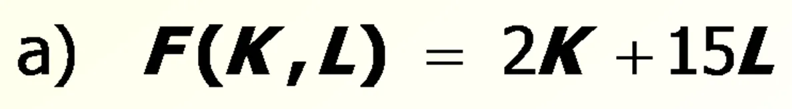
a) F(K, L) = 2K + 15L
b) F(K, L) = √(KL)
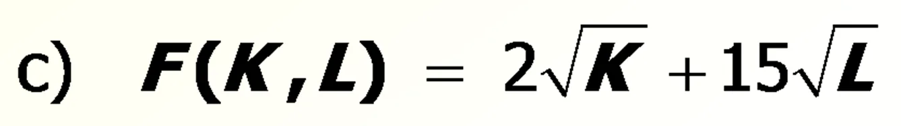
c) F(K, L) = 2√K + 15√L
教师备注（原文＋译文）6 段
教师备注（原文照录）
Answers:
(a) and (b) have constant returns to scale. (c) has decreasing returns to scale.
An easy way to see this is to pick two values for K and L (say, K=1 and L=1), and a value for z (say, z=2). Then, compare F(K,L) with F(zK,zL).
教师备注（译文）
答案：
(a) 与 (b) 是规模收益不变。(c) 是规模收益递减。
一个简便的验证方法是：给 K 与 L 各取两个值（比如 K=1、L=1），再给 z 取一个值（比如 z=2），然后比较 F(K,L) 与 F(zK,zL)。
- 三个答案的验证过程（考试要写）：
- (a) F(zK,zL) = 2zK + 15zL = z(2K + 15L) = zF → 不变
- (b) F(zK,zL) = √(z²KL) = z√(KL) = zF → 不变
- (c) F(zK,zL) = 2√(zK) + 15√(zL) = √z·(2√K + 15√L) = √z·F < zF（当 z>1）→ 递减
- (c) 递减的直觉：两种投入的指数都是 1/2，加起来等于 1 才是不变；这里「各自开方再相加」使得规模扩大时产出增长慢于规模。
3-8Assumptions of the model
| 原文 | 中文对照 |
|---|---|
| Assumptions of the model | 模型的假设 |
| Technology is fixed. | 技术是固定的。 |
| The economy's supplies of capital and labor are fixed at: | 经济的资本与劳动供给固定于： |
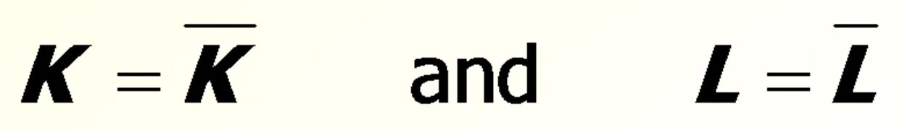
K = K̄, L = L̄
教师备注（原文＋译文）6 段
教师备注（原文照录）
Emphasize that "K" and "L" (without bars on top) are variables - they can take on various magnitudes. On the other hand, "Kbar" and "Lbar" are specific values of these variables. Hence, "K = Kbar" means that the variable K equals the specific amount Kbar.
Regarding the assumptions:
In chapters 7 and 8 (Economic Growth I and II), we will relax these assumptions: K and L will grow in response to investment and population growth, respectively, and the level of technology will increase over time.
教师备注（译文）
强调「K」与「L」（上方没有横线）是变量——它们可以取不同数值。而「Kbar」与「Lbar」是这些变量的特定取值。因此「K = Kbar」意味着变量 K 等于特定数量 Kbar。
关于这些假设：
在第 7、8 章（经济增长 I 与 II）中我们会放松这些假设：K 与 L 将分别随投资与人口增长而增长，技术水平也会随时间提高。
- 三条假设构成「长期」的定义：技术固定、K 固定、L 固定。三者都不动，Y 就被钉死在 Ȳ。
- 记号约定必须分清：K 是变量，K̄ 是给定值；本章到处是带横线的字母，读题时先看有没有横线。
- 备注的章号（第 7、8 章）与本书实际（第 8–10 章增长理论）不一致，原页如此。
3-9Determining GDP
| 原文 | 中文对照 |
|---|---|
| Determining GDP | 决定 GDP |
| Output is determined by the fixed factor supplies and the fixed state of technology: | 产出由固定的要素供给与固定的技术状态决定： |
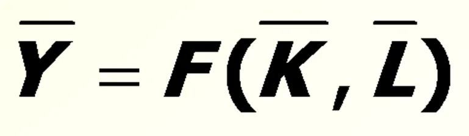
Ȳ = F(K̄, L̄)
教师备注（原文＋译文）2 段
教师备注（原文照录）
Again, emphasize that "F(Kbar,Lbar)" means we are evaluating the function at a particular combination of capital and labor. The resulting value of output is called "Ybar".
教师备注（译文）
再次强调，「F(Kbar,Lbar)」意味着我们在资本与劳动的某个特定组合上求函数值。得到的产出值称为「Ybar」。
- 这是全章最重要的一行：Ȳ = F(K̄, L̄)，产出是外生给定的常数。
- 由此得到一个反直觉但关键的结论：在本章模型中，需求变动不能改变 Y，只能改变 Y 的构成与价格（r）。这与第 11 章短期模型（需求能改变 Y）形成根本对立。
3-10The distribution of national income
| 原文 | 中文对照 |
|---|---|
| The distribution of national income | 国民收入的分配 |
| determined by factor prices (要素物价), the prices per unit that firms pay for the factors of production. | 由要素价格决定，即企业为每单位生产要素支付的价格。 |
| The wage (工资) is the price of L, | 工资是 L 的价格， |
| the rental rate (租赁物价) is the price of K. | 租赁价格是 K 的价格。 |
教师备注（原文＋译文）2 段
教师备注（原文照录）
Recall from chapter 2: the value of output equals the value of income. The income is paid to the workers, capital owners, land owners and so forth. We now explore a simple theory of income distribution.
教师备注（译文）
回忆第 2 章：产出的价值等于收入的价值。收入被支付给工人、资本所有者、土地所有者等等。现在我们来探讨一个简单的收入分配理论。
- 「distribution」的机制是价格：不是谁分配，而是要素市场定价的结果。
- 两个价格：工资 W（劳动的价格）与租赁率 R（资本的价格）。注意 R 是「租用一单位资本一年」的价格，不是资本品的买价。
3-11Notation
| 原文 | 中文对照 |
|---|---|
| Notation | 记号 |
| W = nominal wage | W = 名义工资 |
| R = nominal rental rate | R = 名义租赁率 |
| P = price of output | P = 产出价格 |
| W/P = real wage (measured in units of output) | W/P = 实际工资（以产出单位衡量） |
| R/P = real rental rate | R/P = 实际租赁率 |
教师备注（原文＋译文）12 段
教师备注（原文照录）
It might be worthwhile to refresh students' memory about nominal and real variables.
The nominal wage & rental rate are measured in currency units.
The real wage is measured in units of output.
To see this, suppose W = €10/hour and P = €2 per unit of output.
Then, W/P = (€10/hour) / (€2/unit of output) = 5 units of output per hour of work.
It's true, the firm is paying the workers in money units, not in units of output. But, the real wage is the purchasing power of the wage - the amount of stuff that workers can buy with their wage.
教师备注（译文）
复习名义变量与实际变量可能是有价值的。
名义工资与名义租赁率以货币单位衡量。
实际工资以产出单位衡量。
为看清这一点，假设 W = 10 欧元/小时，P = 2 欧元/单位产出。
那么 W/P =（10 欧元/小时）/（2 欧元/单位产出）= 每小时 5 单位产出。
确实，企业用货币单位而不是产出单位支付工人。但实际工资是工资的购买力——工人用工资能买到多少东西。
- 单位换算是本章的基本功：W/P 的单位是「产出/小时」，R/P 的单位是「产出/机器」。
- 备注的算例要会复现：W=10、P=2 → W/P = 5 单位产出/小时。
- 名义量除以价格才成为实际量，这是贯穿全课的方法（第 5 章的 M/P、第 7 章的 W/P 同理）。
3-12How factor prices are determined
| 原文 | 中文对照 |
|---|---|
| How factor prices are determined | 要素价格如何决定 |
| Factor prices are determined by supply and demand in factor markets. | 要素价格由要素市场的供给与需求决定。 |
| Recall: Supply of each factor is fixed. | 回忆：每种要素的供给是固定的。 |
| What about demand? | 那需求呢？ |
教师备注（原文＋译文）4 段
教师备注（原文照录）
Since the distribution of income depends on factor prices, we need to see how factor prices are determined.
Each factor's price is determined by supply and demand in a market for that factor. For instance, supply and demand for labor determine the wage.
教师备注（译文）
由于收入分配取决于要素价格，我们需要看清要素价格是如何决定的。
每种要素的价格由该要素市场的供给与需求决定。例如，劳动的供给与需求决定工资。
- 逻辑推进：供给已固定（垂直）→ 价格完全由需求决定 → 所以接下来必须推导需求（3-14 起）。
- 这是本章的推理主线：固定供给 + 向下倾斜的需求 = 均衡价格。
3-13How factor prices are determined（图示）
| 原文 | 中文对照 |
|---|---|
| How factor prices are determined | 要素价格如何决定 |
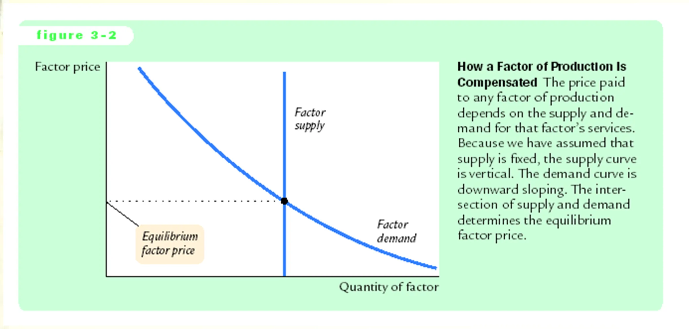
- 图的结构：纵轴要素价格（W/P 或 R/P），横轴要素数量，垂直的供给曲线 + 向下倾斜的需求曲线 → 交点即均衡要素价格。
- 垂直供给是本模型的关键特征：它使需求方的任何移动都只改变价格，不改变数量（与 3-58 的投资需求移动同理）。
3-14Demand for labor
| 原文 | 中文对照 |
|---|---|
| Demand for labor | 劳动需求 |
| Assume markets are competitive: each firm takes W, R, and P as given | 假设市场是竞争性的：每家企业把 W、R、P 视为给定 |
| Basic idea: A firm hires each unit of labor if the cost does not exceed the benefit. | 基本思想：只要成本不超过收益，企业就雇用每一单位劳动。 |
| cost = real wage that is paid | 成本 = 支付的实际工资 |
| benefit = marginal product of labor (劳动的边际产量) | 收益 = 劳动的边际产量 |
- 决策规则一句话：只要 MPL ≥ W/P 就继续雇人。
- 「竞争性」的含义是价格接受者：企业无法影响 W 与 P，所以只能调整雇用量。这使劳动需求曲线可以由 MPL 曲线直接给出（3-20）。
3-15Marginal product of labor (MPL)（劳动的边际产量）
| 原文 | 中文对照 |
|---|---|
| Marginal product of labor (MPL)(劳动的边际产量) | 劳动的边际产量 |
| def: The extra output the firm can produce using an additional unit of labor (holding other inputs fixed): | 定义：在保持其他投入不变时，企业多使用一单位劳动所能多生产的产出： |
| MPL = F (K, L +1) – F (K, L) | MPL = F(K, L+1) − F(K, L) |
| Or, | 或者， |
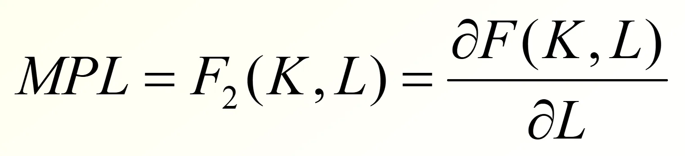
MPL = ∂F(K, L) / ∂L
- 两个等价定义：离散差分（多雇一人增加的产出）与偏导数（连续情形）。考试两种写法都可能出现。
- 「holding other inputs fixed」是 MPL 定义的一部分：K 不变，只变 L。这是与规模收益（K、L 同变）的根本区别。
3-16Exercise: compute & graph MPL
| 原文 | 中文对照 |
|---|---|
| Exercise: compute & graph MPL | 练习：计算并画出 MPL |
| L Y MPL | L Y MPL |
| 0 0 n.a. | 0 0 不适用 |
| 1 10 ? | 1 10 ？ |
| 2 19 ? | 2 19 ？ |
| 3 27 8 | 3 27 8 |
| 4 34 ? | 4 34 ？ |
| 5 40 ? | 5 40 ？ |
| 6 45 ? | 6 45 ？ |
| 7 49 ? | 7 49 ？ |
| 8 52 ? | 8 52 ？ |
| 9 54 ? | 9 54 ？ |
| 10 55 ? | 10 55 ？ |
| Determine MPL at each value of L | 计算每个 L 值下的 MPL |
| Graph the production function | 画出生产函数 |
| Graph the MPL curve with MPL on the vertical axis and L on the horizontal axis | 画出 MPL 曲线，纵轴为 MPL、横轴为 L |
教师备注（原文＋译文）2 段
教师备注（原文照录）
This exercise is pretty basic review. It's good for students who have not had principles of economics in a few years, and students whose graphing skills could benefit from some remedial attention. Many instructors could probably "hide" or omit this and the next slide from their presentations.
教师备注（译文）
这个练习是相当基础的复习。对多年没学过经济学原理的学生，以及作图技能需要补一补的学生很有用。许多教师可能可以「隐藏」或略过这一页与下一页。
- 计算规则：MPL = 本行 Y − 上一行 Y（因为 L 每次增加 1）。答案见 3-19。
- 已给的第三行 MPL = 8 是校验点：27 − 19 = 8 ✓。
3-17answers
answers:
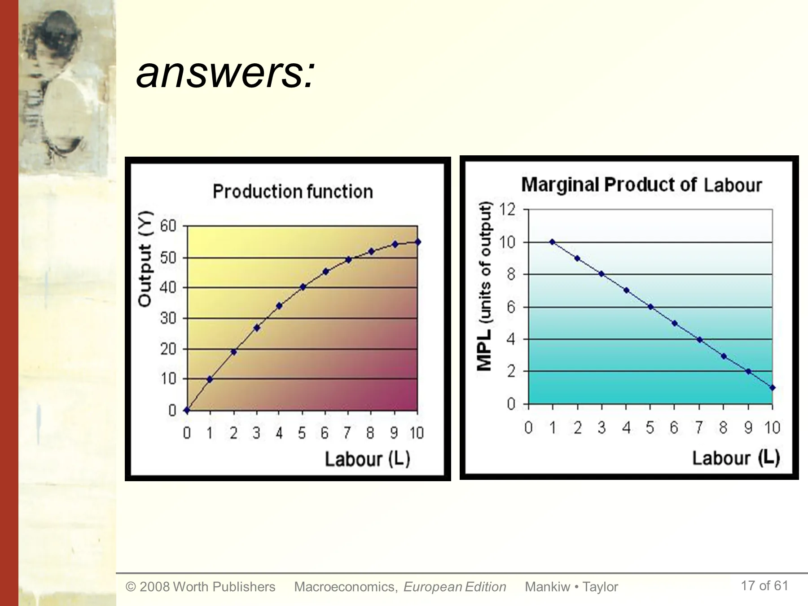
- 上图：生产函数 Y = F(L)，斜率递减（凹函数）——这就是边际报酬递减的图形表现。
- 下图：MPL 曲线，随 L 增加而向下倾斜，与上图的斜率一一对应。
- 两图关系：生产函数的斜率 = MPL。做题时若给出生产函数图，可直接读出各点斜率。
3-18Diminishing marginal returns（边际产量递减）
| 原文 | 中文对照 |
|---|---|
| Diminishing marginal returns(边际产量递减) | 边际产量递减 |
| As a factor input is increased, its marginal product falls (other things equal). | 当一种要素投入增加时，其边际产量下降（其他条件不变）。 |
| Intuition: L while holding K fixed | 直觉：K 固定而 L 增加 |
| fewer machines per worker | 每名工人分摊的机器更少 |
| lower productivity | 生产率更低 |
教师备注（原文＋译文）14 段
教师备注（原文照录）
Tell class: Many production functions have this property.
This slide introduces some short-hand notation that will appear throughout the PowerPoint presentations of the remaining chapters:
The up and down arrows mean increase and decrease, respectively.
The symbol "" means "causes" or "leads to."
Hence, the text after "Intuition" should be read as follows:
"An increase in labor while holding capital fixed causes there to be fewer machines per worker, which causes lower productivity."
Many instructors use this type of short-hand (or something very similar), and it's much easier and quicker for students to write down in their notes.
教师备注（译文）
告诉全班：许多生产函数都有这个性质。
这一页引入了在后面各章幻灯片中会反复出现的简写记号：
上下箭头分别表示增加与减少。
符号「⇒」表示「导致」或「引起」。
因此，「Intuition」之后的文字应读作：
「在资本固定时增加劳动，导致每名工人分摊的机器更少，从而导致生产率更低。」
许多教师使用这类简写（或非常类似的写法），学生记笔记时这样写更快、更容易。
- 递减的物理原因是「人均资本下降」：K 固定、L 增加 → 每工人机器更少 → 边际产出下降。
- 递减是短期概念（一种要素可变）；规模收益是长期概念（全部要素同比例变）。两者可以同时成立：柯布–道格拉斯函数既是规模收益不变，又有边际报酬递减（3-28）。
3-19Exercise (part 2)
| L | Y | MPL |
|---|---|---|
| 0 | 0 | n.a. |
| 1 | 10 | 10 |
| 2 | 19 | 9 |
| 3 | 27 | 8 |
| 4 | 34 | 7 |
| 5 | 40 | 6 |
| 6 | 45 | 5 |
| 7 | 49 | 4 |
| 8 | 52 | 3 |
| 9 | 54 | 2 |
| 10 | 55 | 1 |
| 原文 | 中文对照 |
|---|---|
| Suppose W/P = 6. | 假设 W/P = 6。 |
| If L = 3, should a firm hire more or less labor? Why? | 如果 L = 3，企业应多雇还是少雇劳动？为什么？ |
| What if L = 7? | 如果 L = 7 呢？ |
教师备注（原文＋译文）6 段
教师备注（原文照录）
If L=3, then the benefit of hiring another worker (MPL=7) exceeds the cost of doing so (W/P = 6), so it pays the firm to increase L.
If L=7, then the firm should hire fewer workers: the 7th worker adds only MPL=4 units of output, yet cost W/P = 6.
The point of this slide is to get students to see the idea behind the labor demand = MPL curve.
教师备注（译文）
若 L=3，多雇一名工人的收益（MPL=7）超过其成本（W/P=6），所以企业增加 L 有利可图。
若 L=7，企业应减少雇工：第 7 名工人只增加 MPL=4 单位产出，成本却是 W/P=6。
这一页的目的是让学生看清「劳动需求 = MPL 曲线」背后的思想。
- 判据：比较 MPL 与 W/P。L=3 时 MPL(第 4 人) = 7 > 6 → 增雇；L=7 时 MPL(第 7 人) = 4 < 6 → 减雇。
- 均衡点在 MPL = W/P = 6 处，即 L = 5（第 5 人的 MPL 正好为 6）。这就是 3-20 的结论。
3-20MPL and the demand for labor
| 原文 | 中文对照 |
|---|---|
| MPL and the demand for labor | MPL 与劳动需求 |
| Each firm hires labor up to the point where MPL = W/P | 每家企业雇工直到 MPL = W/P |
| Units of output | 产出单位 |
| Units of labor, L | 劳动单位 L |
| MPL, Labor demand | MPL，劳动需求 |
| Real wage | 实际工资 |
| Quantity of labor demanded | 劳动需求量 |
教师备注（原文＋译文）14 段
教师备注（原文照录）
It's easy to see that the MPL curve is the firm's L demand curve.
Let L* be the value of L such that MPL = W/P.
Suppose L < L*. Then, the benefit of hiring one more worker (MPL) exceeds the cost (W/P), so the firm can increase its profits by hiring one more worker.
Instead, suppose L > L*. Then, the benefit of the last worker hired (MPL) is less than the cost (W/P), so the firm should reduce labour to increase its profits.
When L = L*, then firm cannot increase its profits either by raising or lowering L. L is already at the optimal level.
Hence, the firm hires L to the point where MPL = W/P.
This establishes that the MPL curve is the firm's labour demand curve.
教师备注（译文）
很容易看出 MPL 曲线就是企业的劳动需求曲线。
设 L* 为使 MPL = W/P 的 L 值。
若 L < L*，多雇一名工人的收益（MPL）超过成本（W/P），企业可以通过多雇一人增加利润。
反之，若 L > L*，最后雇用的那名工人的收益（MPL）小于成本（W/P），企业应减少劳动以增加利润。
当 L = L* 时，企业无论增加还是减少 L 都无法增加利润，L 已处于最优水平。
因此，企业雇工直到 MPL = W/P。
这就确立了 MPL 曲线就是企业的劳动需求曲线。
- 结论：劳动需求曲线 = MPL 曲线（两者是同一条线，只是纵轴读法不同：MPL 或 W/P）。
- 三个区间的决策逻辑要能复述：L < L* 增雇、L > L* 减雇、L = L* 最优。
3-21The equilibrium real wage
| 原文 | 中文对照 |
|---|---|
| The equilibrium real wage | 均衡实际工资 |
| Units of output | 产出单位 |
| Units of labor, L | 劳动单位 L |
| The real wage adjusts to equate labor demand with supply. | 实际工资调整到使劳动需求等于劳动供给。 |
| Labor supply | 劳动供给 |
| MPL, Labor demand | MPL，劳动需求 |
| Equilibrium real wage | 均衡实际工资 |
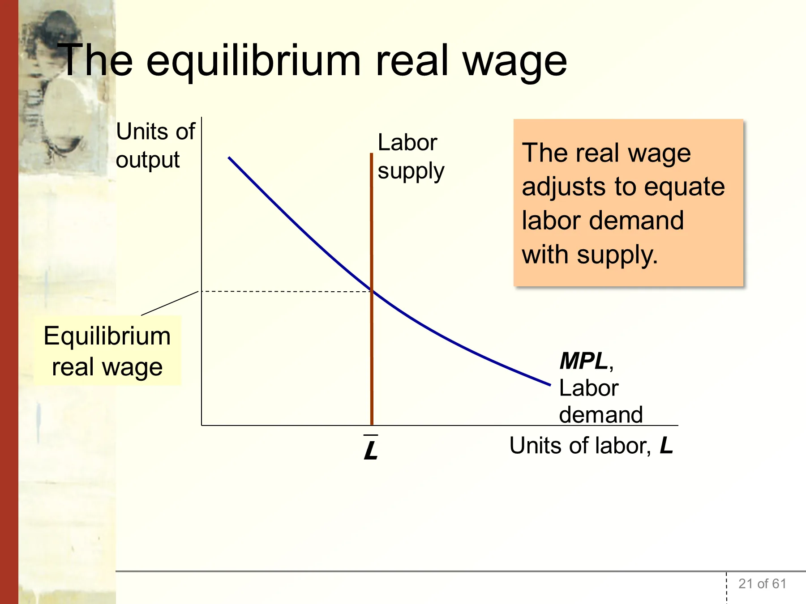
教师备注（原文＋译文）4 段
教师备注（原文照录）
The labor supply curve is vertical: We are assuming that the economy has a fixed quantity of labor, 𝑳 ̅, whether the real wage is high or low.
Combining this labor supply curve with the demand curve we've developed in previous slides shows how the real wage is determined.
教师备注（译文）
劳动供给曲线是垂直的：我们假设无论实际工资高低，经济的劳动数量固定为 L̄。
把这条劳动供给曲线与前面几页推导出的需求曲线结合，就说明了实际工资如何决定。
- 均衡条件：MPL(L̄) = W/P。因为 L 固定在 L̄，实际工资由 L̄ 处的 MPL 唯一决定。
- 图的特点：供给垂直 → 需求曲线的位置决定工资，工资不决定就业量。这是古典模型的核心特征。
- 与第 7 章对照：那里劳动供给不再垂直、工资有黏性，才会出现「非自愿失业」。
3-22Determining the rental rate
| 原文 | 中文对照 |
|---|---|
| Determining the rental rate | 决定租赁率 |
| We have just seen that MPL = W/P | 我们刚刚看到 MPL = W/P |
| The same logic shows that MPK = R/P: | 同样的逻辑表明 MPK = R/P： |
| diminishing returns (边际产量递减) to capital: MPK as K | 资本的边际报酬递减：K 增加时 MPK 下降 |
| The MPK curve is the firm's demand curve for renting capital. | MPK 曲线就是企业租用资本的需求曲线。 |
| Firms maximize profits (利润) by choosing K such that MPK = R/P. | 企业通过选择使 MPK = R/P 的 K 来最大化利润。 |
教师备注（原文＋译文）2 段
教师备注（原文照录）
In our model, it's easiest to think of firms renting capital from households (the owners of all factors of production). R/P is the real cost of renting a unit of K for one period of time. In the real world, of course, many firms own some of their capital. But, for such a firm, the market rental rate is the opportunity cost of using its own capital instead of renting it to another firm. Hence, R/P is the relevant "price" in firms' capital demand decisions, whether firms own their capital or rent it.
教师备注（译文）
在我们的模型中，最容易的想法是企业向家庭（所有生产要素的所有者）租用资本。R/P 是租用一单位 K 一个时期的实际成本。在现实世界中，许多企业当然拥有自己的部分资本。但对这样的企业而言，市场租赁率就是使用自有资本、而不是把它租给别的企业的机会成本。因此，无论企业是自有还是租用资本，R/P 都是企业资本需求决策中的相关「价格」。
- 劳动与资本的对称性：MPL = W/P 与 MPK = R/P，两条逻辑完全一样（成本 = 收益）。
- 「自有资本也要按市场租赁率计算机会成本」是备注的关键补充——否则会误以为自有资本没有成本。
3-23The equilibrium real rental rate
| 原文 | 中文对照 |
|---|---|
| The equilibrium real rental rate | 均衡实际租赁率 |
| Units of output | 产出单位 |
| Units of capital, K | 资本单位 K |
| The real rental rate adjusts to equate demand for capital with supply. | 实际租赁率调整到使资本需求等于资本供给。 |
| Supply of capital | 资本供给 |
| MPK, demand for capital | MPK，资本需求 |
| equilibrium R/P | 均衡 R/P |
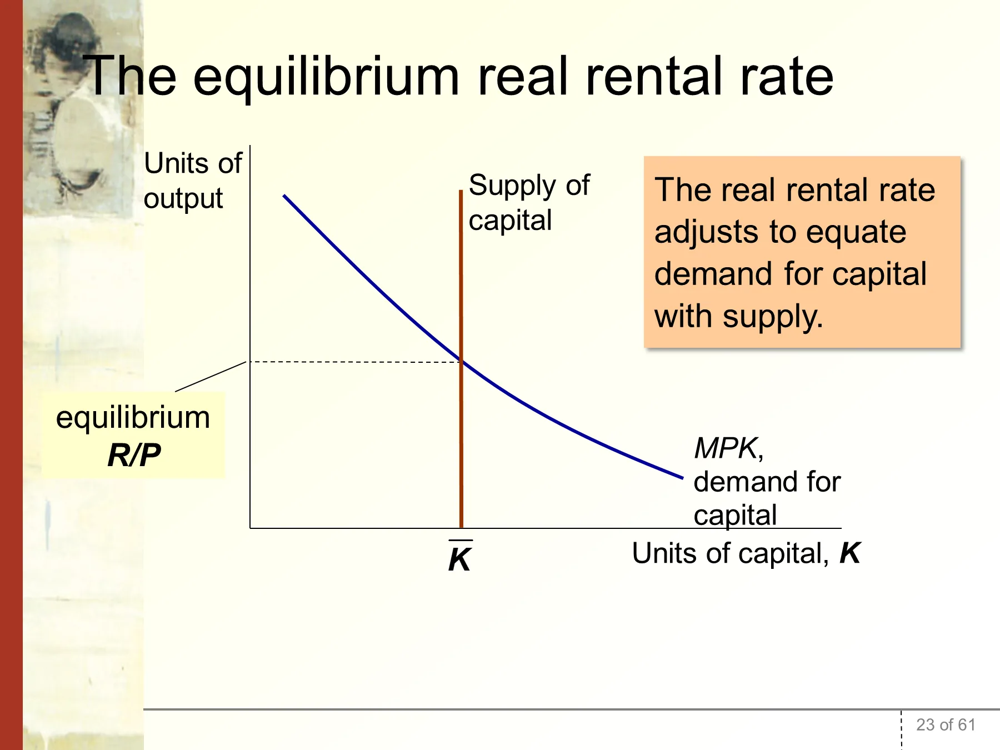
教师备注（原文＋译文）6 段
教师备注（原文照录）
The previous slide used the same logic behind the labor demand curve to assert that the capital demand curve is the same as the downward-sloping MPK curve.
The supply of capital is fixed (by assumption), so the supply curve is vertical.
The real rental rate (R/P) is determined by the intersection of the two curves.
教师备注（译文）
上一页用劳动需求曲线背后的同样逻辑，断言资本需求曲线就是向下倾斜的 MPK 曲线。
资本供给（按假设）是固定的，所以供给曲线是垂直的。
实际租赁率（R/P）由两条曲线的交点决定。
- 与 3-21 完全平行：垂直供给 + 向下需求 = 价格由需求决定。
- 均衡条件：MPK(K̄) = R/P。资本数量固定，所以 R/P 由 K̄ 处的 MPK 唯一确定。
3-24The Neoclassical Theory of Distribution
| 原文 | 中文对照 |
|---|---|
| The Neoclassical (新古典主义)Theory of Distribution | 新古典分配理论 |
| states that each factor input is paid its marginal product, i.e. | 认为每种要素投入都按其边际产品获得报酬，即 |
| MPL = W/P, MPK = R/P | MPL = W/P，MPK = R/P |
- 一句话概括：按边际产品付酬（each factor paid its marginal product）。这是本章分配理论的全部内容。
- 「新古典」区别于「古典」之处在于强调边际：不是按阶级或制度分配，而是按最后一单位要素的贡献定价。
- 两个等式合起来就是 3-25 的分配结果。
3-25How income is distributed
| 原文 | 中文对照 |
|---|---|
| How income is distributed: | 收入如何分配： |
| total labor income = | 总劳动收入 = |
| total capital income = | 总资本收入 = |
| If production function has constant returns to scale, then | 如果生产函数规模收益不变，那么 |
| national income | 国民收入 |
| labor income | 劳动收入 |
| capital income | 资本收入 |
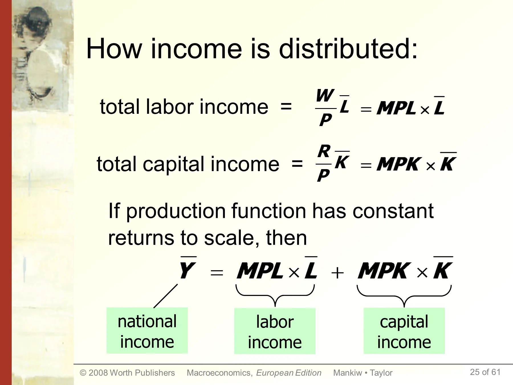
total labor income = (W/P)·L̄ = MPL × L̄
total capital income = (R/P)·K̄ = MPK × K̄
Ȳ = MPL × L̄ + MPK × K̄
总劳动收入 =（W/P）·L̄ = MPL × L̄
总资本收入 =（R/P）·K̄ = MPK × K̄
国民收入 Ȳ = MPL × L̄ + MPK × K̄
- 最后一行是欧拉定理（Euler's theorem）：规模收益不变时，各要素按其边际产品付酬恰好分尽总产出，无剩余也无不足。
- 推导逻辑：Ȳ = F(K̄,L̄) 且 F 是一次齐次 → Ȳ = F_K·K̄ + F_L·L̄ = MPK·K̄ + MPL·L̄。
- 这一行是本章的理论顶点：它同时解释了「产出如何分配」与「为什么没有超额利润」。
3-26The ratio of labor income to total income in the United States, 1960–2019
| 原文 | 中文对照 |
|---|---|
| The ratio of labor income to total income in the United States, 1960–2019 | 美国劳动收入占总收入的比率，1960–2019 |
教师备注（原文＋译文）4 段
教师备注（原文照录）
Similar graph appears in the textbook as Figure 3-5.
Available: https://fred.stlouisfed.org/series/LABSHPUSA156NRUG
教师备注（译文）
教材中图 3-5 有类似的图。
数据可得：https://fred.stlouisfed.org/series/LABSHPUSA156NRUG
- 图形特征：1960–2000 年间劳动份额大致稳定在 65%–68% 的窄幅区间，2000 年后缓慢下滑至 60% 左右。
- 理论含义：柯布–道格拉斯函数预言劳动份额恒为 (1−α)，而现实中它长期稳定、近年下滑——稳定性支持该函数，下滑则提示 α 在上升（3-31 第 1 条）。
- 序列代码 LABSHPUSA156NRUG 可直接查数。
3-27The Cobb-Douglas production function（第 1 帧）
| 原文 | 中文对照 |
|---|---|
| The Cobb-Douglas production function | 柯布–道格拉斯生产函数 |
| The Cobb-Douglas production function has constant factor shares: | 柯布–道格拉斯生产函数具有不变的要素份额： |
| α = capital's share of total income: | α = 资本在总收入中的份额： |
| capital income = MPK × K = αY | 资本收入 = MPK × K = αY |
| labor income = MPL × L = (1 – α)Y | 劳动收入 = MPL × L = (1 − α)Y |
| The Cobb-Douglas production function is: | 柯布–道格拉斯生产函数为： |
| where A represents the level of technology. | 其中 A 表示技术水平。 |
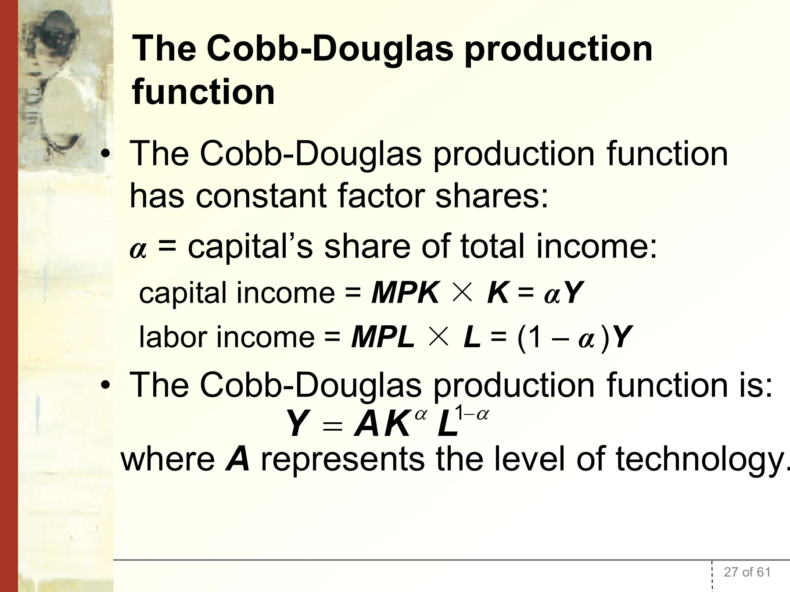
Y = A K^α L^(1−α)
- 三个参数的含义：A = 技术（全要素生产率），α = 资本份额，1−α = 劳动份额。
- 「constant factor shares」是这个函数最重要的性质：无论 K、L 如何变化，资本始终拿 α 比例、劳动始终拿 1−α 比例。这解释了 3-26 中劳动份额的长期稳定。
- 现实校准：美国劳动份额约 2/3，故 α ≈ 1/3。
3-28The Cobb-Douglas production function（第 2 帧）
| 原文 | 中文对照 |
|---|---|
| The Cobb-Douglas production function | 柯布–道格拉斯生产函数 |
| Each factor's marginal product is proportional to its average product: | 每种要素的边际产品与其平均产品成比例： |
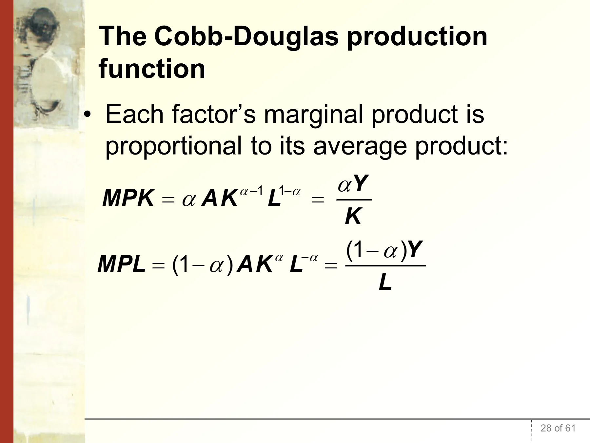
MPK = α A K^(α−1) L^(1−α) = αY / K
MPL = (1−α) A K^α L^(−α) = (1−α)Y / L
资本的边际产品 = α·Y/K（即 α × 资本的平均产品）
劳动的边际产品 = (1−α)·Y/L（即 (1−α) × 劳动的平均产品）
教师备注（原文＋译文）2 段
教师备注（原文照录）
These formulas can be derived with basic calculus and algebra.
教师备注（译文）
这些公式可以用基本的微积分与代数推导出来。
- 两个公式的读法：MPK = α × (Y/K)，其中 Y/K 是资本的平均产品；MPL = (1−α) × (Y/L)。
- 由此可立即验证欧拉定理：MPK·K + MPL·L = αY + (1−α)Y = Y ✓。
- 也说明为什么柯布–道格拉斯函数既规模收益不变（指数和为 1）又有边际报酬递减（指数小于 1）。
3-29Labor productivity and wages
| 原文 | 中文对照 |
|---|---|
| Labor productivity and wages | 劳动生产率与工资 |
| Theory: wages depend on labor productivity | 理论：工资取决于劳动生产率 |
| U.S. data: | 美国数据： |
| Time Period | Growth Rate of Labor Productivity | Growth Rate of Real Wages |
|---|---|---|
| 1960-2019 | 2.0% | 1.8% |
| 1960-1973 | 3.0 | 2.7 |
| 1973-1995 | 1.5 | 1.2 |
| 1995-2010 | 2.7 | 2.2 |
| 2010-2019 | 0.9 | 1.0 |
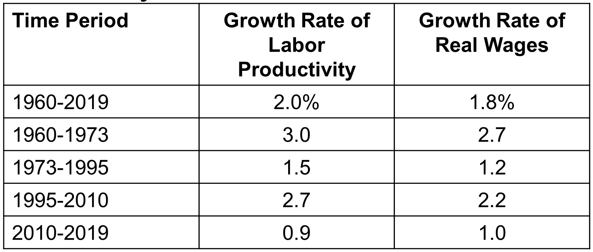
| 时期 | 劳动生产率增长率 | 实际工资增长率 |
|---|---|---|
| 1960–2019 | 2.0% | 1.8% |
| 1960–1973 | 3.0 | 2.7 |
| 1973–1995 | 1.5 | 1.2 |
| 1995–2010 | 2.7 | 2.2 |
| 2010–2019 | 0.9 | 1.0 |
教师备注（原文＋译文）8 段
教师备注（原文照录）
The table shows the average annual rates of productivity and real wage growth in each time period. While not equal, the two series are very highly correlated.
Except, because these are growth rate, the overall difference between productivity and wages could be large now. This potential uncoupling of productivity growth and wages can be discussed, but is beyond the scope of the textbook.
The final row, 2010–2019, shows the "new normal"
Source: U.S. Department of Labor
教师备注（译文）
该表给出各时期生产率与实际工资的年均增长率。两者虽不相等，但高度相关。
只不过，由于这些是增长率，生产率与工资之间的总体差距现在可能已经很大。这种生产率增长与工资可能「脱钩」的现象可以讨论，但超出教材范围。
最后一行 2010–2019 显示了「新常态」。
来源：美国劳工部。
- 核心事实：实际工资增长率 ≈ 劳动生产率增长率，五段时期中四段的差距在 0.3–0.5 个百分点以内。
- 理论依据：MPL = (1−α)Y/L，工资随人均产出同向变动（3-28）。
- 两处例外值得注意：1973–1995 年生产率增速腰斩（3.0 → 1.5，即「生产率放缓」之谜）；2010–2019 年工资增速反超生产率（1.0 > 0.9）。
3-30The growing gap between rich & poor
| 原文 | 中文对照 |
|---|---|
| The growing gap between rich & poor | 贫富差距不断扩大 |
| Inequality has been rising in recent decades. | 近几十年来不平等程度上升。 |
| Gini coefficient | 基尼系数 |
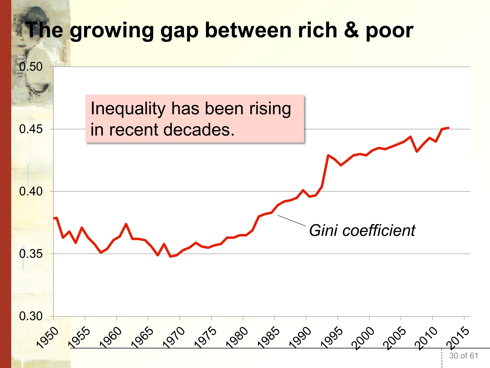
教师备注（原文＋译文）6 段
教师备注（原文照录）
This slide and the one that follows corresponds to new material in the 9th edition.
The Gini coefficient is a popular measure of inequality. A value of 0 would mean perfect equality, while a value of 1 would mean that one person has all the income.
Source: Same as the textbook.
教师备注（译文）
这一页与下一页对应第 9 版新增的材料。
基尼系数是衡量不平等的常用指标。取值 0 意味着完全平等，取值 1 意味着一个人拥有全部收入。
来源：同教材。
- 基尼系数的取值范围与含义：0 = 完全平等，1 = 一人独占全部收入；越大越不平等。
- 图形走势：1950 年约 0.38 → 1970 年前后降至约 0.35（最低点）→ 此后持续上升 → 2015 年约 0.45。
- 数据形态：曲线在 1980 年代后明显加速上行，与 3-31 的三条解释对应。
3-31Explanations for rising inequality
| 原文 | 中文对照 |
|---|---|
| Explanations for rising inequality | 对不平等上升的解释 |
| 1. Rise in capital's share of income, since capital income is more concentrated than labor income. | 1. 资本收入份额上升，因为资本收入比劳动收入更集中。 |
| 2. From The Race Between Education and Technology by Goldin and Katz: | 2. 出自 Goldin 与 Katz 的《教育与技术的赛跑》： |
| Technological progress has increased the demand for skilled relative to unskilled workers. | 技术进步提高了对熟练工人相对于非熟练工人的需求。 |
| Due to a slowdown in expansion of education, the supply of skilled workers has not kept up. | 由于教育扩张放缓，熟练工人的供给未能跟上。 |
| Result: Rising gap between wages of skilled and unskilled workers | 结果：熟练与非熟练工人的工资差距扩大 |
| 3. From Earnings Inequality and the Changing Association Between Spouses' Earnings by Christine R. Schwartz: | 3. 出自 Christine R. Schwartz 的《收入不平等与配偶收入关联的变化》： |
| People with above-average incomes, marry people with above-average incomes. | 收入高于平均的人与收入高于平均的人结婚。 |
| This assortative mating increases inequality. | 这种「 assortative mating」（同类婚配）加剧了不平等。 |
- 三条解释分属三个机制，考试要能分开： | # | 机制 | 关键词 | |---|---|---| | 1 | 要素份额变化 | 资本份额 α 上升，且资本收入分布更集中 | | 2 | 技能溢价（供需） | 技能偏向型技术进步 + 教育供给放缓 → 技能溢价上升 | | 3 | 家庭形成 | 同类婚配（assortative mating）→ 家庭收入分布更分散 |
- 第 2 条是「赛跑」隐喻：技术跑得比教育快，供给跟不上需求，溢价扩大。
- 三条解释不互相排斥，可以同时成立；这是论述题的标准结构。
3-32Demand for goods & services
| 原文 | 中文对照 |
|---|---|
| Demand for goods & services | 商品与服务的需求 |
| Components of aggregate demand: | 总需求的构成： |
| C = consumer demand for g & s | C = 消费者对商品与服务的需求 |
| I = demand for investment goods | I = 对投资品的需求 |
| G = government demand for g & s | G = 政府对商品与服务的需求 |
| (closed economy: no NX) | （封闭经济：没有 NX） |
教师备注（原文＋译文）2 段
教师备注（原文照录）
"g & s" is short for "goods & services"
教师备注（译文）
「g & s」是「goods & services」（商品与服务）的缩写。
- 封闭经济假设使恒等式从 Y = C + I + G + NX 简化为 Y = C + I + G（NX = 0）。
- 接下来三页分别给出 C、I、G 的行为假设：C 取决于可支配收入、I 取决于实际利率、G 外生。
3-33Consumption, C
| 原文 | 中文对照 |
|---|---|
| Consumption, C | 消费 C |
| def: disposable income (可支配收入) is total income minus total taxes: | 定义：可支配收入是总收入减去总税收： |
| Y – T | Y − T |
| Consumption function (消费函数) | 消费函数 |
| C = C (Y – T) | C = C(Y − T) |
| Shows that (Y – T) C | 表明（Y − T）上升会导致 C 上升 |
| def: The marginal propensity to consume (MPC: 边际消费倾向) is the increase in C caused by a one-unit increase in disposable income. | 定义：边际消费倾向（MPC）是可支配收入每增加一单位所引起的 C 的增加量。 |
| marginal propensity to save MPS = 1-MPC | 边际储蓄倾向 MPS = 1 − MPC |
- 消费函数的唯一自变量是可支配收入 Y − T，不是总收入 Y。这使税收 T 成为影响消费的政策变量。
- MPC + MPS = 1：每多一元可支配收入，不是消费就是储蓄。MPC 通常在 0.6–0.8 之间。
- 注意记号：C = C(Y−T) 左边是变量、右边是函数，同名不同义（与 1-39 的一般函数记号一致）。
3-34The consumption function
| 原文 | 中文对照 |
|---|---|
| The consumption function | 消费函数 |
| C | C |
| Y – T | Y − T |
| C (Y –T) | C(Y − T) |
| The slope of the consumption function is the MPC. | 消费函数的斜率就是 MPC。 |
| MPC | MPC |
| 1 | 1 |
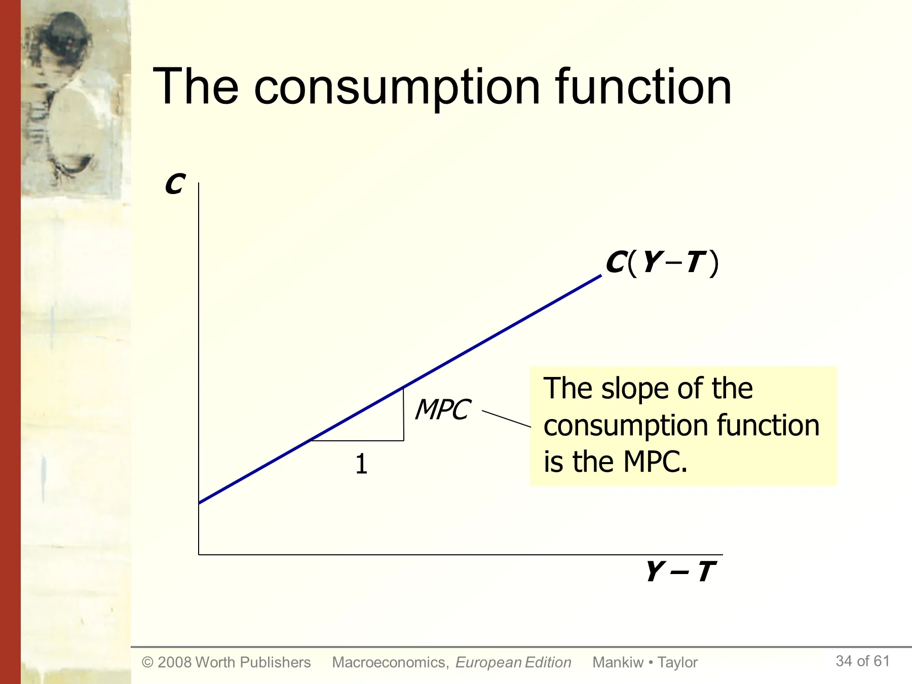
- 图形三要素：纵轴 C、横轴 Y−T、斜率 = MPC（介于 0 与 1 之间）。
- 图中标注的「1」表示参照线（45° 线）的斜率为 1；消费函数比它平缓，说明 MPC < 1。
- 截距为正（即使可支配收入为零也有基本消费），这是凯恩斯消费函数的典型特征。
3-35Investment, I
| 原文 | 中文对照 |
|---|---|
| Investment, I | 投资 I |
| The investment function is I = I (r), | 投资函数为 I = I(r)， |
| where r denotes the real interest rate (实际利率), the nominal interest rate corrected for inflation. | 其中 r 表示实际利率，即经过通胀校正的名义利率。 |
| The real interest rate is: - the cost of borrowing - the opportunity cost of using one's own funds to finance investment spending. | 实际利率是：- 借钱的成本 - 用自有资金为投资支出融资的机会成本 |
| So, r I | 所以，r 上升导致 I 下降 |
- 两个身份：借款人的成本与自有资金的机会成本——所以无论企业是否借钱，r 都影响投资决策。
- 投资函数不含 Y：这是本章的关键假设，使投资只受利率影响，从而可贷资金市场能独立决定 r。
- 与第 11 章对照：短期模型中投资还受产出影响（加速数），本章不含。
3-36The investment function
| 原文 | 中文对照 |
|---|---|
| The investment function | 投资函数 |
| r | r |
| I | I |
| Spending on investment goods is a downward-sloping function of the real interest rate | 投资品支出是实际利率的向下倾斜函数 |
| I (r) | I(r) |
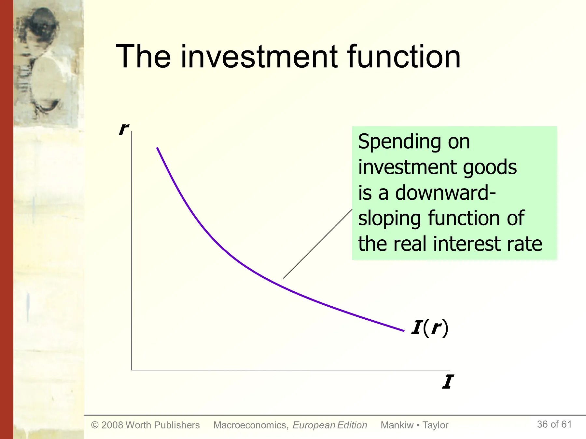
- 图形：纵轴 r、横轴 I，曲线向右下方倾斜。
- 这条曲线在 3-41 会被重新解释为可贷资金的需求曲线——同一张图，两种读法。
3-37Government spending, G
| 原文 | 中文对照 |
|---|---|
| Government spending, G | 政府支出 G |
| G includes government spending on goods and services. | G 包括政府对商品与服务的支出。 |
| G excludes transfer payments (转移支付). | G 不包括转移支付。 |
| - welfare for the poor | - 对穷人的福利 |
| - social security for the elderly | - 对老年人的社会保障 |
| Assume government spending and total taxes are exogenous: | 假设政府支出与总税收是外生的： |
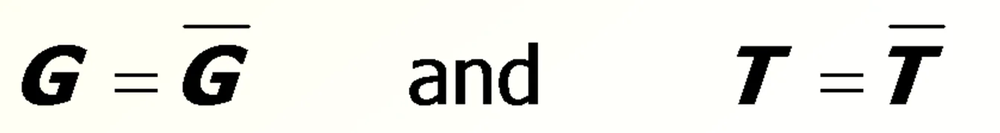
Ḡ, T̄
教师备注（原文＋译文）2 段
教师备注（原文照录）
Transfer payments are included in C and I.
教师备注（译文）
转移支付被包含在 C 与 I 中。
- G 与 T 都带横线 = 外生给定，是模型的政策参数。这是做比较静态（3-53 ~ 3-58）的基础。
- 转移支付不计入 G，但最终体现在 C 中（备注一句点明），这与 2-20 的「避免重复计算」是同一逻辑。
3-38The market for goods & services
| 原文 | 中文对照 |
|---|---|
| The market for goods & services | 商品与服务市场 |
| The real interest rate adjusts to equate demand with supply. | 实际利率调整到使需求等于供给。 |
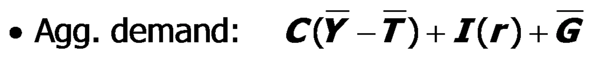
Agg. demand: C(Ȳ − T̄) + I(r) + Ḡ
均衡条件（照录）
Ȳ = C(Ȳ − T̄) + I(r) + Ḡ
总需求：C(Ȳ − T̄) + I(r) + Ḡ
均衡：Ȳ = C(Ȳ − T̄) + I(r) + Ḡ
教师备注（原文＋译文）4 段
教师备注（原文照录）
Note that the only variable in the equilibrium condition that doesn't have a "bar" over it is the real interest rate.
When the full slide is showing, before you advance to the next one, you might want to note that the interest rate is important in financial markets as well, so we will next develop a simple model of the financial system.
教师备注（译文）
注意，均衡条件中唯一没有横线的变量就是实际利率。
当整页显示出来、在你进入下一页之前，可以提示：利率在金融市场中同样重要，所以接下来我们将建立一个金融体系的简单模型。
- 均衡式中只有 r 没有横线——所以 r 是唯一的内生变量，它必须调整到使等式成立。
- 这个等式是本章的核心方程：左边供给（Ȳ 固定），右边需求（C 取决于 T̄、I 取决于 r、G 固定）。
- 3-39 起把同一件事换个市场语言重述：把 Ȳ − C − G 叫「储蓄供给」，把 I(r) 叫「资金需求」。
3-39The loanable funds（可贷资金）market
| 原文 | 中文对照 |
|---|---|
| The loanable funds (可贷资金) market | 可贷资金市场 |
| A simple supply-demand model of the financial system. | 金融体系的一个简单供求模型。 |
| One asset: "loanable funds" | 一种资产：「可贷资金」 |
| demand for funds: investment | 资金需求：投资 |
| supply of funds: saving | 资金供给：储蓄 |
| "price" of funds: real interest rate | 资金「价格」：实际利率 |
- 三要素对照表必须记牢：
| 市场角色 | 对应变量 |
|---|---|
| 需求方 | 投资 I(r) |
| 供给方 | 储蓄 S |
| 价格 | 实际利率 r |
- 这个模型与产品市场数学等价（3-52 会证明），但直觉更清楚：r 是资金的价格。
3-40Demand for funds: Investment
| 原文 | 中文对照 |
|---|---|
| Demand for funds: Investment | 资金需求：投资 |
| The demand for loanable funds: | 可贷资金的需求： |
| comes from investment: Firms borrow to finance spending on plant & equipment, new office buildings, etc. Consumers borrow to buy new houses. | 来自投资：企业借款为厂房设备、新办公楼等支出融资；消费者借款购买新房。 |
| depends negatively on r, the "price" of loanable funds (the cost of borrowing). | 与 r 负相关，r 是可贷资金的「价格」（借款成本）。 |
- 需求方包括企业与家庭：前者借来买设备，后者借来买房（住房投资，2-14）。
- 「负相关」的理由：r 上升 → 项目回报率低于资金成本 → 部分项目不再值得做。
3-41Loanable funds demand curve
| 原文 | 中文对照 |
|---|---|
| Loanable funds demand curve | 可贷资金需求曲线 |
| r | r |
| I | I |
| The investment curve is also the demand curve for loanable funds. | 投资曲线同时也是可贷资金的需求曲线。 |
| I (r) | I(r) |
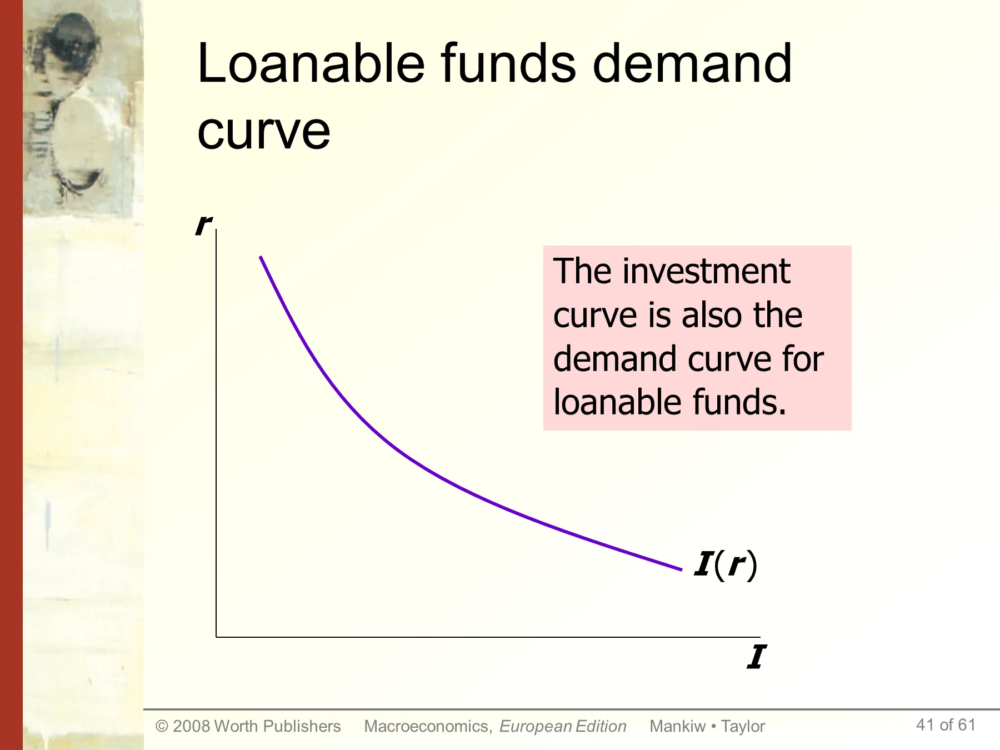
- 一句话：同一条 I(r) 曲线，横轴既可读作「投资量」也可读作「资金需求量」。
- 这不是两条曲线，而是同一关系的两种解释——考试若问「为什么投资曲线就是资金需求曲线」，答案即此。
3-42Supply of funds: Saving
| 原文 | 中文对照 |
|---|---|
| Supply of funds: Saving | 资金供给：储蓄 |
| The supply of loanable funds comes from saving: | 可贷资金的供给来自储蓄： |
| Households use their saving to make bank deposits, purchase bonds and other assets. These funds become available to firms to borrow to finance investment spending. | 家庭把储蓄用于银行存款、购买债券与其他资产。这些资金可供企业借用来为投资支出融资。 |
| The government may also contribute to saving if it does not spend all of the tax revenue it receives. | 如果政府没有把收到的税收全部花掉，政府也可能对储蓄有贡献。 |
教师备注（原文＋译文）2 段
教师备注（原文照录）
Here you might take some time to explain how resources can be channelled into investment via financial markets. Effective financial markets enable the pooling of resources from millions of households, risk-sharing and constitute a source of funding for possibly large private and public investments. Another role performed by financial markets is to facilitate the dissemination and aggregation of information on investment projects and their opportunity costs.
教师备注（译文）
这里可以花点时间解释资源如何通过金融市场被引导到投资中。有效的金融市场使数以百万计家庭的资源得以汇集、风险得以分担，并为可能规模巨大的私人与公共投资提供资金来源。金融市场的另一个作用是促进投资项目及其机会成本相关信息的传播与汇总。
- 供给方的两个来源：家庭储蓄（主要）与政府储蓄（T − G，可能为负）。
- 备注补充了金融市场的三大功能：汇集资源、分担风险、汇总信息——这是「储蓄如何变成投资」的机制说明。
3-43Types of saving
| 原文 | 中文对照 |
|---|---|
| Types of saving | 储蓄的类型 |
| private saving (私人储蓄) = (Y –T ) – C | 私人储蓄 =（Y − T）− C |
| public saving (公共储蓄) = T – G | 公共储蓄 = T − G |
| national saving (国民储蓄), S | 国民储蓄 S |
| = private saving + public saving | = 私人储蓄 + 公共储蓄 |
| = (Y –T ) – C + T – G | =（Y − T）− C + T − G |
| = Y – C – G | = Y − C − G |
教师备注（原文＋译文）12 段
教师备注（原文照录）
After showing definition of private saving,
give the interpretation of the equation: private saving is disposable income minus consumption spending
explain why private saving is part of the supply of loanable funds:
Suppose a person earns €50,000/year, pays €10,000 in taxes, and spends €35,000 on goods and services. There's €5000 remaining. What happens to that €5000? The person might use it to buy stocks or bonds, or she might put it in her savings account or money market deposit account. In all of these cases, this €5000 becomes part of the supply of loanable funds in the financial system.
After displaying public saving, explain the equation's interpretation: public saving is tax revenue minus government spending.
Notice the analogy to private saving – both concepts represent income less spending: for the private household, income is (Y-T) and spending is C. For the government, income is T and spending is G.
教师备注（译文）
在给出私人储蓄的定义之后，
解释这个等式：私人储蓄是可支配收入减去消费支出
解释为什么私人储蓄是可贷资金供给的一部分：
假设一个人年收入 50,000 欧元，缴税 10,000 欧元，在商品与服务上花 35,000 欧元。剩下 5,000 欧元。这 5,000 欧元会怎样？她可能用它买股票或债券，也可能存入储蓄账户或货币市场存款账户。在所有情形下，这 5,000 欧元都成为金融体系中可贷资金供给的一部分。
在给出公共储蓄之后，解释这个等式：公共储蓄是税收收入减去政府支出。
注意与私人储蓄的类比——两个概念都是「收入减支出」：对私人家庭，收入是（Y−T）、支出是 C；对政府，收入是 T、支出是 G。
- 三个定义必须默写并能互相推出：私人储蓄 = (Y−T) − C；公共储蓄 = T − G；国民储蓄 S = Y − C − G。
- 关键化简：T 在加总时抵消了——所以国民储蓄与税收无关，只与 Y、C、G 有关。这解释了 3-54 中「减税不直接改变 S，只有通过 C 才影响 S」。
- 备注的 5,000 欧元算例说明：储蓄不等于「存银行」，而是「未消费的收入」，买股票债券同样是储蓄。
3-44Notation: Δ = change in a variable
| 原文 | 中文对照 |
|---|---|
| Notation: Δ = change in a variable | 记号：Δ = 变量的变化 |
| For any variable X, ΔX = "the change in X" Δ is the Greek (uppercase) letter Delta | 对任意变量 X，ΔX =「X 的变化量」；Δ 是希腊字母（大写）Delta |
| Examples: | 例： |
| If ΔL = 1 and ΔK = 0, then ΔY = MPL. | 若 ΔL = 1、ΔK = 0，则 ΔY = MPL。 |
| More generally, if ΔK = 0, then | 更一般地，若 ΔK = 0，则 |
| Δ(Y–T ) = ΔY – ΔT , so | Δ(Y−T) = ΔY − ΔT，所以 |
| ΔC = MPC × (ΔY – ΔT ) | ΔC = MPC ×（ΔY − ΔT） |
| = MPC ΔY – MPC ΔT | = MPC·ΔY − MPC·ΔT |
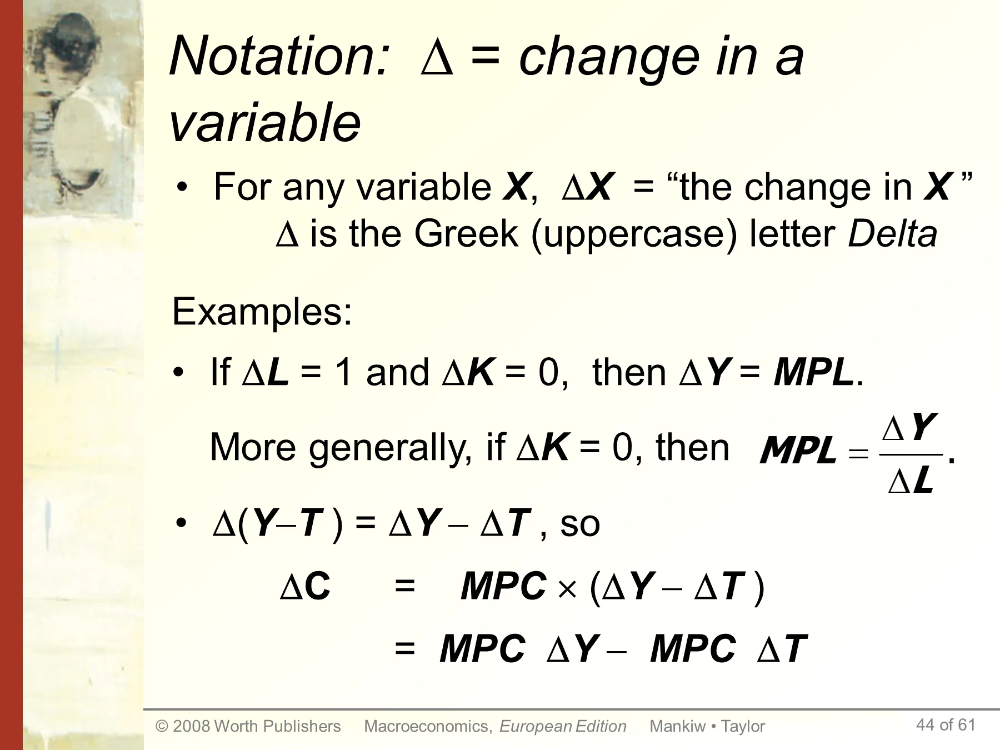
- 三条运算规则要记：Δ 是线性算子——Δ(Y−T) = ΔY − ΔT；Δ(aX) = aΔX。
- MPL = ΔY/ΔL（当 ΔK = 0）是 MPL 的差分定义，与 3-15 的偏导数一致。
- ΔC = MPC·(ΔY − ΔT) 是后面所有比较静态计算的核心公式，3-45、3-46 全靠它。
3-45EXERCISE: Calculate the change in saving
| 原文 | 中文对照 |
|---|---|
| EXERCISE: Calculate the change in saving | 练习：计算储蓄的变化 |
| Suppose MPC = 0.8 and MPL = 20. | 假设 MPC = 0.8，MPL = 20。 |
| For each of the following, compute S : | 对下列各情形计算 ΔS： |
| G = 100 | ΔG = 100 |
| T = 100 | ΔT = 100 |
| Y = 100 | ΔY = 100 |
| L = 10 | ΔL = 10 |
- 起点公式：S = Y − C − G，所以 ΔS = ΔY − ΔC − ΔG，其中 ΔC = MPC·(ΔY − ΔT)。
- 四个情形分别考：政府购买乘数效应、税收效应、产出效应、劳动投入效应。答案见 3-46。
3-46Answers
| 原文 | 中文对照 |
|---|---|
| Answers | 答案 |
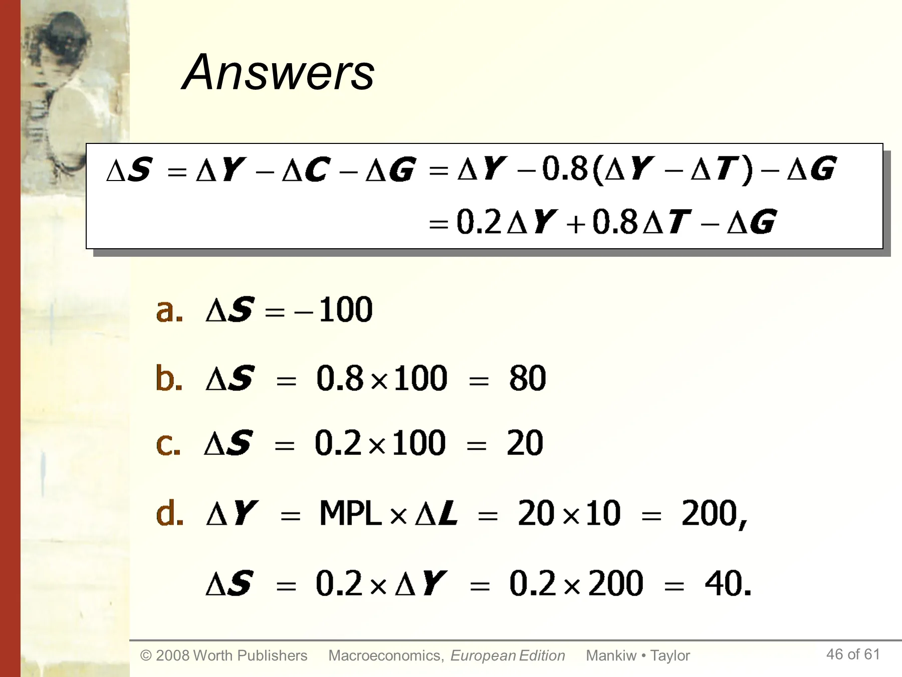
公式与答案（照录）
ΔS = ΔY − ΔC − ΔG = ΔY − 0.8(ΔY − ΔT) − ΔG = 0.2ΔY + 0.8ΔT − ΔG
a. ΔS = −100
b. ΔS = 0.8 × 100 = 80
c. ΔS = 0.2 × 100 = 20
d. ΔY = MPL × ΔL = 20 × 10 = 200，ΔS = 0.2 × ΔY = 0.2 × 200 = 40
ΔS = 0.2ΔY + 0.8ΔT − ΔG
a. 政府购买增加 100 → 储蓄减少 100
b. 税收增加 100 → 储蓄增加 80
c. 产出增加 100 → 储蓄增加 20
d. 劳动增加 10 → 产出增加 200 → 储蓄增加 40
- 通式 ΔS = 0.2ΔY + 0.8ΔT − ΔG 中，系数 0.2 = 1 − MPC = MPS，0.8 = MPC。
- 四个答案的直觉：
- ΔG = +100 → ΔS = −100：政府多花一块，国民储蓄少一块（完全挤出，1:1）。
- ΔT = +100 → ΔS = +80：税收增加使可支配收入减少 100，消费减少 80，储蓄因此增加 80（不是 100，因为消费下降了）。
- ΔY = +100 → ΔS = +20：产出增加中只有 20% 变成储蓄。
- ΔL = +10 → ΔY = 200 → ΔS = 40：先由 MPL 换算产出，再用 0.2 换算储蓄。
3-47Budget surpluses and deficits
| 原文 | 中文对照 |
|---|---|
| Budget surpluses and deficits | 预算盈余与赤字 |
| When T > G, budget surplus (预算盈余) = (T – G) = public saving | 当 T > G，预算盈余 =（T − G）= 公共储蓄 |
| When T < G, budget deficit (预算赤字) = (G –T) and public saving is negative. | 当 T < G，预算赤字 =（G − T），公共储蓄为负。 |
| When T = G, budget is balanced and public saving = 0. | 当 T = G，预算平衡，公共储蓄 = 0。 |
- 三种状态与符号：T > G → 盈余（公共储蓄 > 0）；T < G → 赤字（公共储蓄 < 0）；T = G → 平衡（= 0）。
- 赤字 = 负的公共储蓄，会直接减少国民储蓄 S = Y − C − G，从而推高 r（3-55）。
3-48U.S. federal government surplus/deficit, 1930–2020
| 原文 | 中文对照 |
|---|---|
| U.S. federal government surplus/deficit, 1930–2020 | 美国联邦政府盈余/赤字，1930–2020 |
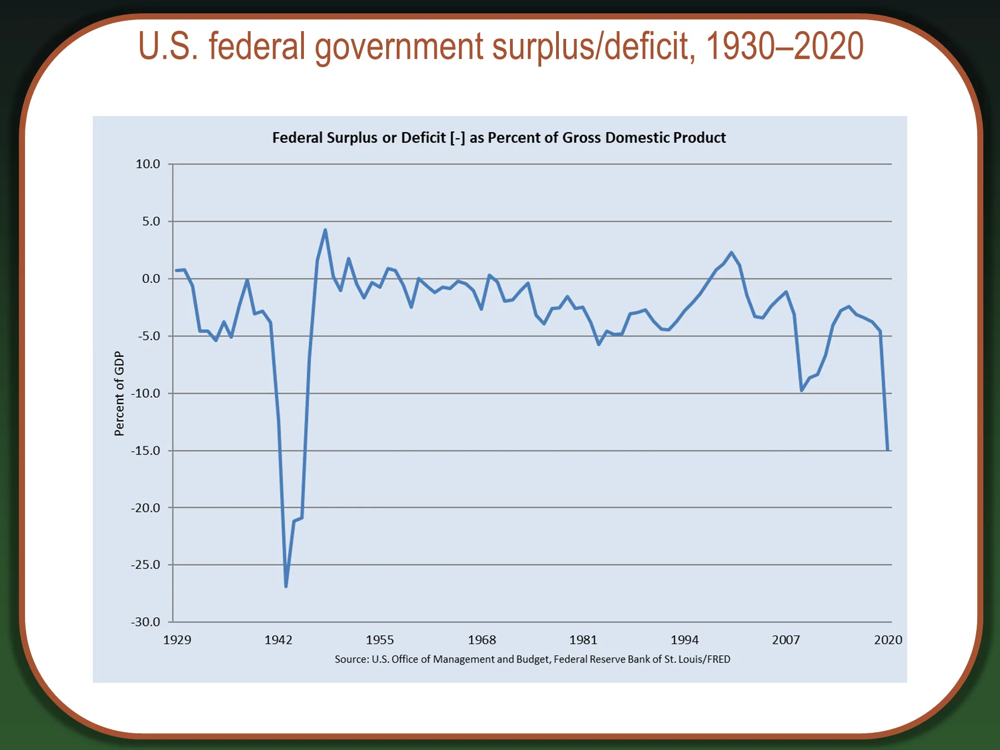
教师备注（原文＋译文）16 段
教师备注（原文照录）
Notes:
The huge deficit in the early 1940s was due to World War II. Wars are expensive.
The budget is close to balanced in the 1950s and 1960s, and it begins a downward trend in the 1970s.
The early 1980s saw the largest deficits (as % of GDP) of the post-World War II era, due to the Reagan tax cuts, defense buildup, and growth in entitlement program outlays.
The budget begins a positive trend in the early 1990s, and a surplus emerges in the late 1990s. There are several possible explanations for the improvement. First, President Bush (the first one) broke his campaign promise not to raise taxes. Second, the Clinton administration barely squeaked a deficit reduction deal through Congress. And third, and probably most importantly, there was a swelling of tax revenues due to the surge in economic growth and the stock market boom. (A stock market boom leads to large capital gains, which leads to large revenues from the capital gains tax.)
The budget swings to deficit again in 2001 due to the Bush tax cuts, multiple wars, and a recession.
Recently, the budget deficit in current dollars has reached all-time highs, due to a sharp fall in tax receipts (Tax Cut and Jobs Act), Financial Crisis and Covid responses
Data source: https://fred.stlouisfed.org/series/FYFSGDA188S
教师备注（译文）
注：
1940 年代初的巨大赤字来自第二次世界大战。战争很昂贵。
1950 与 1960 年代预算接近平衡，1970 年代开始下行。
1980 年代初出现了二战后最大的赤字（占 GDP 比），原因是里根减税、国防扩张与福利项目支出增长。
1990 年代初预算开始转为改善，1990 年代末出现盈余。改善有几种可能解释：第一，布什（老布什）总统违背了不加税的竞选承诺；第二，克林顿政府勉强让国会通过了减赤协议；第三，也可能是最重要的，经济增长与股市繁荣带来了税收激增。（股市繁荣带来大量资本利得，从而带来大量资本利得税收入。）
2001 年预算因布什减税、多场战争与衰退再次转为赤字。
近年，以当期美元计的预算赤字创下历史新高，原因是税收收入骤降（《减税与就业法案》）、金融危机与新冠应对。
数据来源：https://fred.stlouisfed.org/series/FYFSGDA188S
- 五个关键节点：1940 年代初（二战，最大赤字）→ 1950–60 年代（接近平衡）→ 1980 年代初（战后最大，里根）→ 1990 年代末（盈余）→ 2001 后（再度赤字）→ 2020（新冠，历史新高）。
- 1990 年代盈余的三因素（备注）：增税 + 减支协议 + 增长带来的税收激增——第三条最重要，说明赤字是内生的（随经济周期波动）。
- 序列 FYFSGDA188S 为「联邦盈余/赤字占 GDP 比」。
3-49U.S. federal government debt, 1940–2019
| 原文 | 中文对照 |
|---|---|
| U.S. federal government debt, 1940–2019 | 美国联邦政府债务，1940–2019 |
教师备注（原文＋译文）8 段
教师备注（原文照录）
A later chapter will give more details, but for now, tell students that the government finances its deficits by borrowing from the public. (This borrowing takes the form of selling Treasury bonds.) Persistent deficits over time imply persistent borrowing, which causes the debt to increase.
After World War II, occasional budget surpluses allowed the government to retire some of its World War II debt; also, normal economic growth increased the denominator of the debt-to-GDP ratio. Starting in the early 1980s, corresponding to the beginning of huge and persistent deficits, we see a huge increase in the debt ratio, from 32% in 1981 to 66% in 1995. In the mid-1990s, budget surpluses and rapid growth started to reduce the debt ratio, but it started rising again in 2001 due to the economic slowdown, the Bush tax cuts, and higher spending (Afghanistan and Iraq, war on terrorism, 2002 airline bailout, etc.).
The recent financial crisis/recession has increased the debt ratio, as revenues have fallen, while outlays (the stimulus package, bailouts) have sharply increased.
Source: https://fred.stlouisfed.org/series/GFDGDPA188S
教师备注（译文）
后面某章会给出更多细节，但现在告诉学生：政府通过向公众借款为赤字融资（借款形式是发行国债）。持续的赤字意味着持续借款，从而使债务增加。
二战后，偶尔的预算盈余使政府偿还了部分二战债务；同时，正常的经济增长扩大了债务/GDP 比率的分母。从 1980 年代初开始，对应巨大且持续的赤字，我们看到债务比率大幅上升，从 1981 年的 32% 升至 1995 年的 66%。1990 年代中期，预算盈余与快速增长开始降低债务比率，但 2001 年又因经济放缓、布什减税与支出增加（阿富汗与伊拉克、反恐战争、2002 年航空业救助等）而重新上升。
近年的金融危机/衰退提高了债务比率，因为收入下降，而支出（刺激计划、救助）急剧增加。
来源：https://fred.stlouisfed.org/series/GFDGDPA188S
- 存量与流量的关系在此显形：赤字（流量）累积成债务（存量），但债务率的分母是 GDP，所以增长可以稀释债务率（备注强调）。
- 两个数字必记：1981 年 32% → 1995 年 66%（里根时期债务率翻倍）。
- 序列 GFDGDPA188S = 联邦债务占 GDP 比。
3-50Loanable funds supply curve
| 原文 | 中文对照 |
|---|---|
| Loanable funds supply curve | 可贷资金供给曲线 |
| r | r |
| S, I | S, I |
| National saving does not depend on r, so the supply curve is vertical. | 国民储蓄不取决于 r，所以供给曲线是垂直的。 |
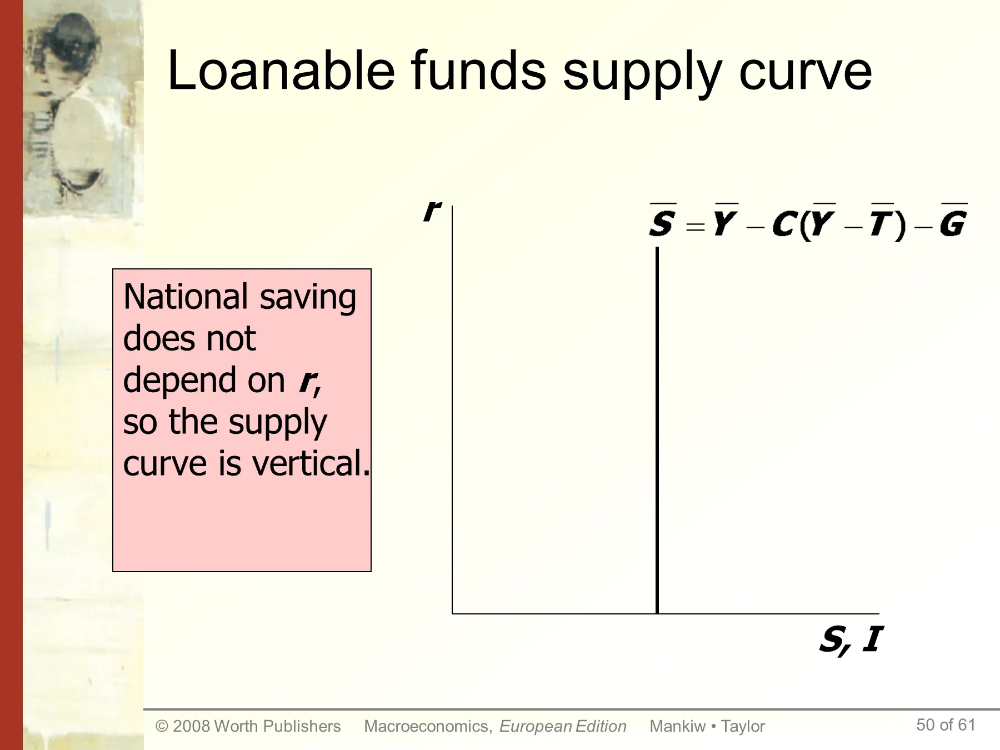
- 垂直的供给曲线来自 S = Ȳ − C(Ȳ−T̄) − Ḡ：右边全是带横线的量，没有 r。
- 这是本章的关键简化。若储蓄依赖 r（3-59），供给曲线就向上倾斜，结论会改变（3-60）。
3-51Loanable funds market equilibrium
| 原文 | 中文对照 |
|---|---|
| Loanable funds market equilibrium | 可贷资金市场均衡 |
| r | r |
| S, I | S, I |
| I (r) | I(r) |
| Equilibrium real interest rate | 均衡实际利率 |
| Equilibrium level of investment | 均衡投资水平 |
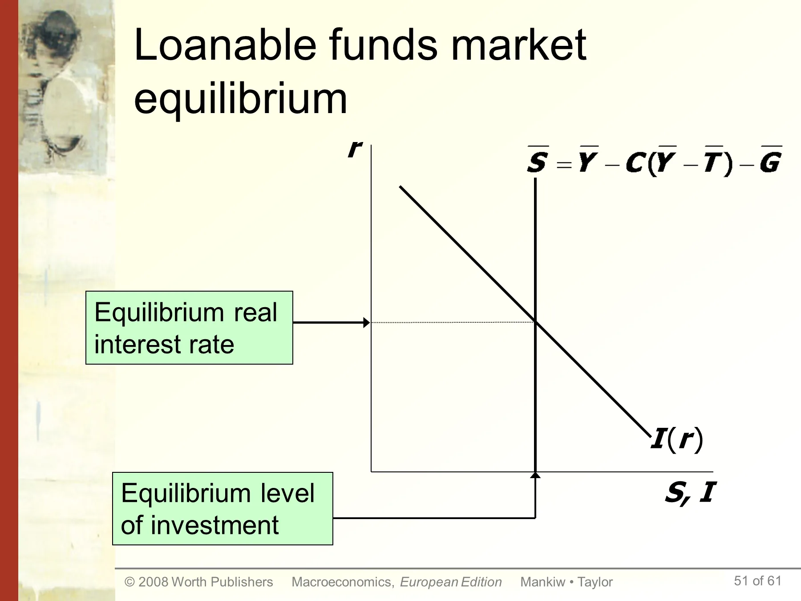
- 均衡：S̄ = I(r)，交点同时给出均衡实际利率 r* 与均衡投资 I*。
- 注意 I* 由供给曲线的位置决定（因为供给垂直）：储蓄决定投资，这是古典模型的核心命题（与第 11 章「储蓄–投资由收入决定」相反）。
3-52The special role of r
| 原文 | 中文对照 |
|---|---|
| The special role of r | r 的特殊作用 |
| r adjusts to equilibrate the goods market and the loanable funds market simultaneously: | r 调整到同时使产品市场与可贷资金市场均衡： |
| If L.F. market is in equilibrium, then | 如果可贷资金市场均衡，那么 |
| Y – C – G = I | Y − C − G = I |
| Add (C +G) to both sides to get | 两边同时加（C + G）得到 |
| Y = C + I + G (goods market eq'm) | Y = C + I + G（产品市场均衡） |
| Thus, | 因此， |
| Eq'm in L.F. market | 可贷资金市场均衡 |
| Eq'm in goods market | 产品市场均衡 |
教师备注（原文＋译文）6 段
教师备注（原文照录）
This slide establishes that we can use the loanable funds supply/demand diagram to see how the interest rate that clears the goods market is determined.
Explain that the symbol means each one implies the other. The thing on the left implies the thing on the right, and vice versa.
More short-hands: "eq'm" is short for "equilibrium."
教师备注（译文）
这一页确立：我们可以用可贷资金供求图来看清出清产品市场的利率是如何决定的。
解释符号「⇔」表示两者互相蕴含：左边蕴含右边，反之亦然。
更多简写：「eq'm」是「equilibrium」（均衡）的缩写。
- 证明只有一步代数：Y − C − G = I ⇔ Y = C + I + G，所以两个市场的均衡条件完全等价。
- 意义：可以用任一框架解题。求 r 时用可贷资金图更直观，求 Y 的构成时用产品市场式更方便。
- 「⇔」的含义是双向蕴含，不是因果——两个市场不是一先一后，而是同一均衡的两种表述。
3-53Mastering the loanable funds model（第 1 帧）
| 原文 | 中文对照 |
|---|---|
| Mastering the loanable funds model | 掌握可贷资金模型 |
| Things that shift the saving curve | 使储蓄曲线移动的因素 |
| public saving | 公共储蓄 |
| fiscal policy: changes in G or T | 财政政策：G 或 T 的变化 |
| private saving | 私人储蓄 |
| preferences | 偏好 |
| tax laws that affect saving | 影响储蓄的税法 |
- 移动供给曲线（储蓄）的两大类因素：公共储蓄（G、T）与私人储蓄（偏好、税法）。
- 记忆法：凡是改变 Y − C − G 中任一组成部分（且不是通过 r）的因素，都会移动供给曲线。
- 注意：改变 T 会同时影响公共储蓄（+ΔT）与私人储蓄（−MPC·ΔT），净效应 = (1−MPC)ΔT（3-46 的 b）。
3-54CASE STUDY: "Reaganomics" in the U.S.
| 原文 | 中文对照 |
|---|---|
| CASE STUDY "Reaganomics" in the U.S. | 案例研究：美国的「里根经济学」 |
| Ronald Reagan's policies during early 1980s: | 里根在 1980 年代初的政策： |
| increases in defense spending: G > 0 | 增加国防支出：ΔG > 0 |
| big tax cuts: T < 0 | 大幅减税：ΔT < 0 |
| According to our model, both policies reduce national saving: | 按我们的模型，两项政策都减少国民储蓄： |
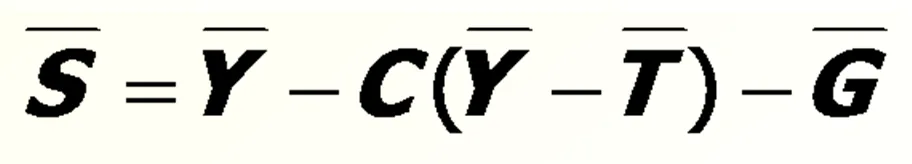
S̄ = Ȳ − C(Ȳ − T̄) − Ḡ
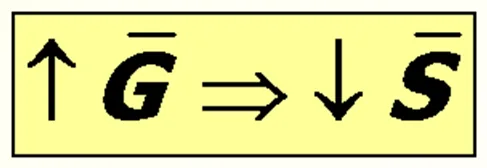
↑Ḡ ⇒ ↓S̄
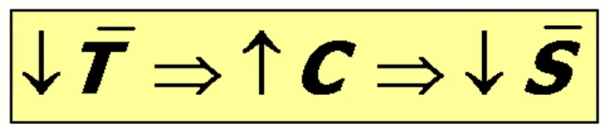
↓T̄ ⇒ ↓S̄
教师备注（原文＋译文）2 段
教师备注（原文照录）
Note the similarities with fiscal policy under Bush II in the last years.
教师备注（译文）
注意与小布什时期最后几年的财政政策的相似之处。
- 两条传导链：
- ΔG > 0 → S = Y − C − G 直接下降（1:1，见 3-46 的 a）。
- ΔT < 0 → 可支配收入上升 → C 上升（幅度 MPC·|ΔT|）→ S 下降（幅度 (1−MPC)·|ΔT|）。
- 两项政策方向一致：都压低国民储蓄，因此模型的预测是 r 上升、I 下降（3-55）。
3-55The Reagan deficits, cont.
| 原文 | 中文对照 |
|---|---|
| 1. The Reagan deficits, cont. | 1. 里根赤字（续） |
| 1. The increase in the deficit reduces national saving… | 1. 赤字增加使国民储蓄减少…… |
| 2. …which causes the real interest rate to rise… | 2. ……这使实际利率上升…… |
| 3. …which reduces the level of investment. | 3. ……这使投资水平下降。 |
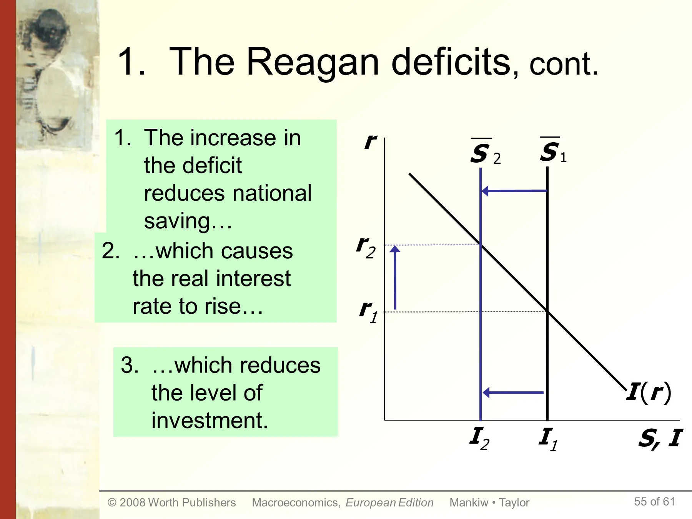
- 三步图解必须能默画：S 左移 → 沿 I(r) 上移 → r 上升、I 下降。
- 结论：财政赤字挤出（crowd out）投资。挤出程度 = 储蓄下降幅度（因为供给垂直）。
- 这是「供给学派」与「传统观点」争论的核心：减税若不能提高储蓄意愿，就只会推高利率、挤出投资。
3-56Are the data consistent with these results?
| variable | 1970s | 1980s |
|---|---|---|
| T – G | –2.2 | –3.9 |
| S | 19.6 | 17.4 |
| r | 1.1 | 6.3 |
| I | 19.9 | 19.4 |
T–G, S, and I are expressed as a percent of GDP
| 原文 | 中文对照 |
|---|---|
| Are the data consistent with these results? | 数据与这些结果一致吗？ |
| Government purchases crowd out (挤出) investment. | 政府购买挤出投资。 |
| 变量 | 1970 年代 | 1980 年代 |
|---|---|---|
| T − G（财政余额，占 GDP %） | −2.2 | −3.9 |
| S（国民储蓄，占 GDP %） | 19.6 | 17.4 |
| r（实际利率，%） | 1.1 | 6.3 |
| I（投资，占 GDP %） | 19.9 | 19.4 |
教师备注（原文＋译文）4 段
教师备注（原文照录）
The model says that investment should have fallen as much as savings. Ask students why they think it didn't.
Answer: in our closed economy model of chapter 3, the only source of loanable funds is national saving. But the U.S. is actually an open economy. In the face of a fall in national saving--the domestic supply of loanable funds, firms can finance their investment spending by importing loanable funds. More on this in an upcoming chapter.
教师备注（译文）
模型说投资应当下降与储蓄同样多。问学生为什么他们认为没有这样。
答案：在第 3 章的封闭经济模型中，可贷资金的唯一来源是国民储蓄。但美国实际上是开放经济。当国民储蓄——国内可贷资金供给——下降时，企业可以通过「进口可贷资金」来为投资支出融资。后面某章会详细讲。
- 数据部分支持模型：赤字扩大（−2.2 → −3.9）、储蓄下降（19.6 → 17.4）、利率大涨（1.1 → 6.3）——三项都符合预测。
- 但投资几乎没降（19.9 → 19.4，仅 −0.5），而储蓄降了 2.2。模型的缺口正是备注指出的：美国是开放经济，外资流入填补了储蓄缺口。
- 这一页是第 6 章（开放经济）的伏笔：NX = S − I，储蓄下降可以由资本净流入而非投资下降来吸收。
3-57Mastering the loanable funds model（第 2 帧）
| 原文 | 中文对照 |
|---|---|
| Mastering the loanable funds model | 掌握可贷资金模型 |
| Things that shift the investment curve: | 使投资曲线移动的因素： |
| certain technological innovations | 某些技术创新 |
| to take advantage of the innovation, firms must buy new investment goods | 为利用这些创新，企业必须购买新的投资品 |
| tax laws that affect investment | 影响投资的税法 |
| investment tax credit | 投资税收抵免 |
教师备注（原文＋译文）4 段
教师备注（原文照录）
Investment tax credit
For example, suppose that the government increases personal income taxes and uses the extra revenue to provide tax cuts for those who invest in new capital. Such a change in the tax laws makes more investment projects profitable and, like a technological innovation, increases the demand for investment goods.
教师备注（译文）
投资税收抵免
例如，假设政府提高个人所得税，并用多出的收入为投资于新资本的人提供税收减免。这种税法变化使更多投资项目变得有利可图，并且像技术创新一样，增加了对投资品的需求。
- 移动需求曲线（投资）的两类因素：技术创新（提高 MPK）与税法（投资税收抵免，降低成本）。
- 注意与 3-53 的分工：供给曲线由储蓄因素移动，需求曲线由投资因素移动，两者不可混。
3-58An increase in investment demand
| 原文 | 中文对照 |
|---|---|
| An increase in investment demand | 投资需求增加 |
| r | r |
| S, I | S, I |
| I2 | I2 |
| An increase in desired investment… | 意愿投资的增加…… |
| I1 | I1 |
| …raises the interest rate. | ……提高了利率。 |
| r2 | r2 |
| r1 | r1 |
| But the equilibrium level of investment cannot increase because the supply of loanable funds is fixed. | 但均衡投资水平无法增加，因为可贷资金的供给是固定的。 |
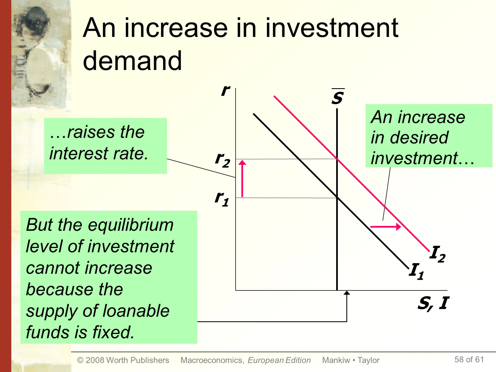
教师备注（原文＋译文）2 段
教师备注（原文照录）
When the supply of loanable funds is fixed, all that changes is that the price of loanable funds increases (r).
教师备注（译文）
当可贷资金供给固定时，唯一发生变化的是可贷资金的价格（r）上升。
- 结论反直觉但要记牢：投资需求上升 → r 上升，但 I 不变（因为 S 垂直）。
- 机制：想投资的项目多了，但可贷资金总量固定，竞争的结果只是把资金价格（利率）抬上去，投资量仍等于储蓄量。
- 这是「供给固定」假设的直接推论；3-60 放松后，I 才会增加。
3-59Saving and the interest rate
| 原文 | 中文对照 |
|---|---|
| Saving and the interest rate | 储蓄与利率 |
| Why might saving depend on r? | 为什么储蓄可能取决于 r？ |
| How would the results of an increase in investment demand be different? | 投资需求增加的结果会有何不同？ |
| Would r rise as much? | r 会涨得一样多吗？ |
| Would the equilibrium value of I change? | 均衡的 I 会变化吗？ |
教师备注（原文＋译文）2 段
教师备注（原文照录）
depend on the interest rate. Because the interest rate is the return to saving (as well as the cost of borrowing), a higher interest rate might reduce consumption and increase saving. If so, the saving curve would be upward sloping, rather than vertical.
教师备注（译文）
取决于利率。因为利率是储蓄的回报（也是借款的成本），更高的利率可能减少消费、增加储蓄。若如此，储蓄曲线将向上倾斜，而不是垂直。
- 储蓄可能依赖 r 的理由：r 是储蓄的回报——利率上升，当前消费的机会成本上升，替代效应促使人们多储蓄。
- 两个待答问题（3-60 回答）：r 涨得较少；I 会增加。
3-60An increase in investment demand when saving depends on r
| 原文 | 中文对照 |
|---|---|
| An increase in investment demand when saving depends on r | 当储蓄取决于 r 时的投资需求增加 |
| r | r |
| S, I | S, I |
| An increase in investment demand raises r, | 投资需求增加提高 r， |
| which induces an increase in the quantity of saving, | 这引起储蓄量增加， |
| which allows I to increase. | 从而使 I 得以增加。 |
| I(r)2 | I(r)₂ |
| I(r) | I(r) |
| r2 | r2 |
| I2 | I2 |
| r1 | r1 |
| I1 | I1 |
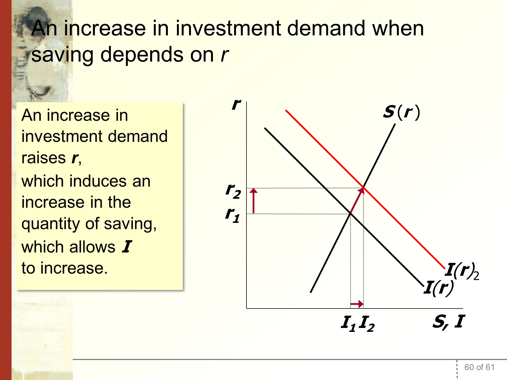
- 与 3-58 的三点差别：
| 项目 | 储蓄垂直（3-58） | 储蓄向上倾斜（3-60） |
|---|---|---|
| r | 上升较多 | 上升较少 |
| I | 不变 | 增加 |
| 机制 | 纯价格效应 | 价格效应 + 数量效应 |
- 政策含义：储蓄对利率越敏感，投资需求扩张越能真正转化为投资增加，而不是只推高利率。
3-61Chapter summary（第 1 帧）
| 原文 | 中文对照 |
|---|---|
| Chapter summary | 本章总结 |
| Total output is determined by | 总产出由以下因素决定 |
| how much capital and labor the economy has | 经济拥有多少资本与劳动 |
| the level of technology | 技术水平 |
| Competitive firms hire each factor until its marginal product equals its price. | 竞争性企业雇用每种要素直到其边际产品等于其价格。 |
| If the production function has constant returns to scale, then labor income plus capital income equals total income (output). | 如果生产函数规模收益不变，那么劳动收入加资本收入等于总收入（产出）。 |
- 三句话对应供给面的三个结论：Ȳ = F(K̄,L̄)（3-9）、MPL = W/P 与 MPK = R/P（3-20、3-22）、欧拉定理（3-25）。
3-62Chapter summary（第 2 帧）
| 原文 | 中文对照 |
|---|---|
| Chapter summary | 本章总结 |
| The economy's output is used for | 经济的产出用于 |
| consumption (which depends on disposable income) | 消费（取决于可支配收入） |
| investment (depends on the real interest rate) | 投资（取决于实际利率） |
| government spending (exogenous) | 政府支出（外生） |
| The real interest rate adjusts to equate the demand for and supply of | 实际利率调整到使以下两者的需求与供给相等 |
| goods and services | 商品与服务 |
| loanable funds | 可贷资金 |
- 三个需求成分的行为假设要能一一对应：C = C(Y−T)、I = I(r)、G = Ḡ。
- 最后一句是本章的均衡机制：r 是唯一的调节变量，同时出清两个市场（3-52）。
3-63Chapter summary（第 3 帧）
| 原文 | 中文对照 |
|---|---|
| Chapter summary | 本章总结 |
| A decrease in national saving causes the interest rate to rise and investment to fall. | 国民储蓄减少使利率上升、投资下降。 |
| An increase in investment demand causes the interest rate to rise, but does not affect the equilibrium level of investment if the supply of loanable funds is fixed. | 投资需求增加使利率上升，但如果可贷资金供给固定，则不影响均衡投资水平。 |
- 两个比较静态结论要能各自配一张图：供给左移 → r↑ I↓（3-55）；需求右移 → r↑ I 不变（3-58）。
- 注意两条结论的差别在哪条曲线移动：移动供给改变 I，移动需求不改变 I（在供给垂直时）。
3-64China's Saving Rate（第 1 帧）
| 原文 | 中文对照 |
|---|---|
| China's Saving Rate | 中国的储蓄率 |
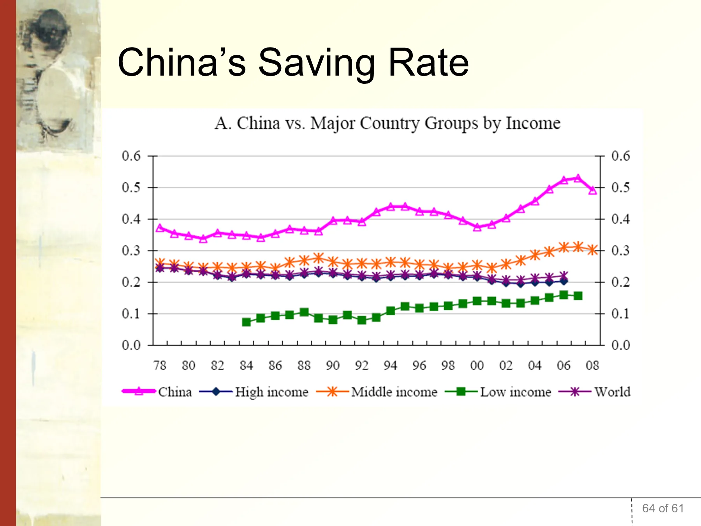
教师备注（原文＋译文）4 段
教师备注（原文照录）
Source: Yang et al (2011)
38 percent in 2000. 51 percent in 2007.
教师备注（译文）
来源：Yang 等（2011）
2000 年为 38%，2007 年为 51%。
- 两个数字：2000 年 38% → 2007 年 51%，七年间上升 13 个百分点。
- 用本章模型解读：储蓄率如此之高，意味着可贷资金供给极为充裕，在封闭经济下会压低 r、扩大 I；在开放经济下则表现为资本净流出（对应第 6 章的 NX > 0）。
3-65China's Saving Rate（第 2 帧）
| 原文 | 中文对照 |
|---|---|
| China's Saving Rate | 中国的储蓄率 |
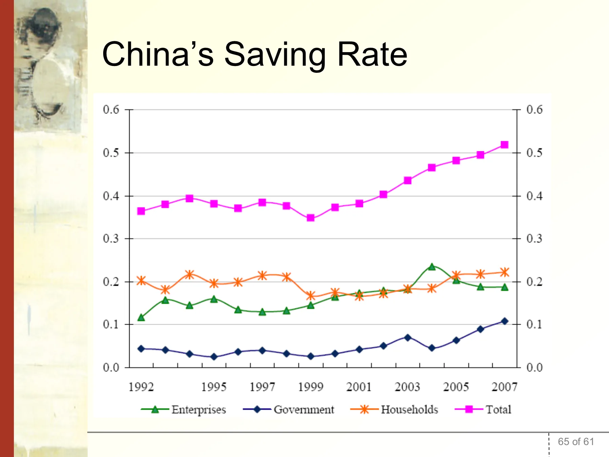
教师备注（原文＋译文）1 段
教师备注（原文照录）
1999年～2007年，中国的总储蓄率劲升了14.4个百分点，大致是这样分配的：家庭贡献了2.7个百分点（家庭储蓄率从1999年的20.2%上升至2007年的22.9%），政府贡献了5.4个百分点（政府储蓄率从1999年的2.7%上升至2007年的8.1%），企业贡献了6.3个百分点（企业府储蓄率从1999年的13.7%上升至2007年的20%）。
- 分解数据要能复述（1999 → 2007，总储蓄率 +14.4 个百分点）： | 部门 | 1999 | 2007 | 贡献（百分点） | |---|---|---|---| | 家庭 | 20.2% | 22.9% | +2.7 | | 政府 | 2.7% | 8.1% | +5.4 | | 企业 | 13.7% | 20.0% | +6.3 | | 合计 | — | — | +14.4 |
- 结论：中国储蓄率上升的主因是企业与政府储蓄（合计 +11.7），家庭储蓄贡献最小（+2.7）。这与「中国高储蓄源于居民节俭」的流行说法相反。
- 对应本章框架：企业储蓄↑ = 留存利润↑，政府储蓄↑ = T − G↑，两者都直接进入 S = Y − C − G。